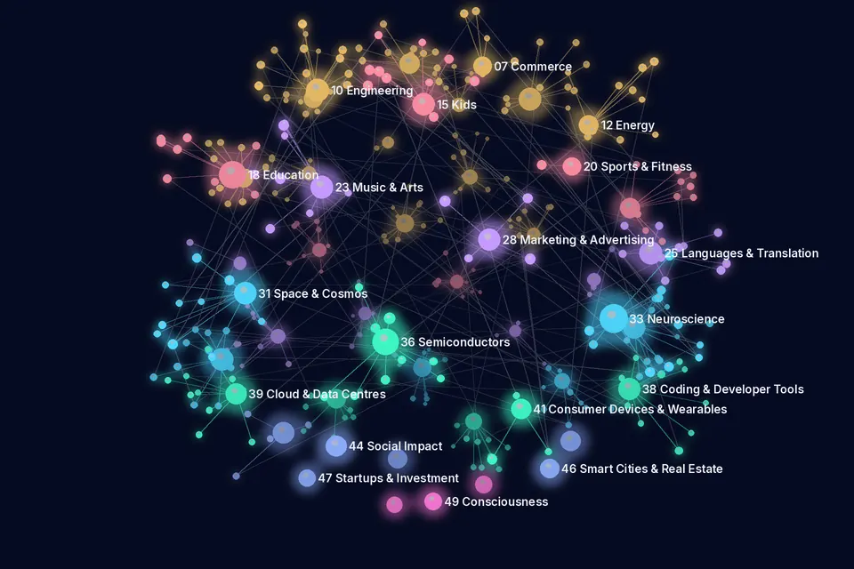

Journal of the AI Universe ✦ Research Papers Today
Research Papers Today
12 November 2026 · 1453 new AI research papers in 48 of the 50 categories · Curated by Dr.P.R.K.Varma
605 peer-reviewed papers and 848 preprints, compiled automatically from arXiv, medRxiv, bioRxiv, PubMed, Crossref, OpenAlex, preprint servers via Crossref (Research Square, Preprints.org, SSRN and others), arxiv_rss, s2. Each line gives the title (linked), authors, venue, date, evidence label and identifier. Abstracts and figures are not reproduced: open the paper to read it. A listing is not an endorsement, and preprints have not been peer-reviewed. Health papers are not medical advice.
Research map in 3D
12 November 2026: the top 320 papers in 48 categories as a 3D network. Large points are categories, small points are papers (brighter = peer-reviewed), and faint lines join papers in different categories that share a topic word in their titles. Drag to rotate, pinch or use + and − to zoom, and tap a paper to open the original. Titles and links only.

Papers per category (48 categories)
01–14 Industries & Sectors 455 papers
01 AI Filmmaking
5 papers · 1 peer-reviewed · 4 preprintsProject page →- Explainable Human Action Intelligence for Reliable and Transparent Video-based RecognitionPriyanka Chaudhari, Geetanjali KaleInternational Journal of Engineering Trends and Technology · · Peer-reviewed · DOI 10.14445/22315381/ijett-v74i10p122
- PhyRubric: Rubric-Grounded Diagnostic Evaluation of Physical Commonsense in Text-to-Video GenerationHuiyi Chen, Weitai Kang, Shicheng Fan et al.arXiv (cs.CV) · · Preprint · arXiv:2611.13576 · Open access
- Few-Step Streaming Video Generation via Condition ShiftingDeyuan Liu, Jungang Li, Kaiwen Zheng et al.arXiv (cs.CV) · · Preprint · arXiv:2611.14033 · Open access
- Hint, Not Hole: Localization-Robust Video Overlay RemovalDongyang Zhang, Wei Zhang, Renjie Zou et al.arXiv (cs.CV) · · Preprint · arXiv:2611.13711 · Open access
- TaoMate-R1: Temporal Role Specialization for Streaming Multi-Reference Video GenerationQijun Gan, Chenwei Zhang, Xinyang Li et al.arXiv (cs.CV) · · Preprint · arXiv:2611.14307 · Open access
02 AI Agriculture
28 papers · 23 peer-reviewed · 5 preprintsProject page →- Efficient hybrid quantum-classical neural networks generation for crop yield prediction using sequential satellite imagesAltares-López S, García-Ripoll JJ, Ribeiro AQuantum Machine Intelligence · · Peer-reviewed · DOI 10.1007/s42484-026-00468-4 · Open access
- In-vitro and in-vivo plant growth-promoting assessment of native actinomycetes for enhancing Abelmoschus esculentus L. growth: pattern recognition and machine learning-based recommendationsKannan R, Moorthy TS, Venkidasamy B et al.3 Biotech · · Peer-reviewed · DOI 10.1007/s13205-026-05131-0 · PMID 43011301 · Open access
- An exploratory early-assessment framework for crop yield and quality based on multi-source sensor data fusion and explainable machine learning: A case study of rice under low-light stressWang H, Sui X, Wu J et al.Smart Agricultural Technology · · Peer-reviewed · DOI 10.1016/j.atech.2026.102592 · Open access
- Applying explainable artificial intelligence for crop classification using remote sensing dataElias Dritsas, M. TrigkaApplied Geomatics · · Peer-reviewed · DOI 10.1007/s12518-026-00829-5
- YOLO-Gr: An AIoT-Enabled Mobile–Edge–Cloud Framework with an Improved YOLO26 for Real-Time Grapevine Disease Detection and Smart Vineyard MonitoringChaman M, Maliki AE, Sadoune Z et al.Smart Agricultural Technology · · Peer-reviewed · DOI 10.1016/j.atech.2026.102728 · Open access
- Hybrid transformer-augmented convolutional network for robust plant disease recognition from leaf imagesZeeshan Ramzan, Abubakar Iqbal, Irfanud Din et al.Scientific Reports · · Peer-reviewed · DOI 10.1038/s41598-026-77697-x · Open access
- LLM-VimAGBNet: an end-to-end inference framework for rice above-ground biomass monitoring with large language model reasoning and frequency-division feature modelingSu M, Luo S, Yun Y et al.Computers and Electronics in Agriculture · · Peer-reviewed · DOI 10.1016/j.compag.2026.112616
- Quantitative analysis of microplastics in soil based on two-trace two-dimensional infrared correlation spectroscopy and deep learningChen J, Yu Y, Dong X et al.Spectrochimica acta. Part A, Molecular and biomolecular spectroscopy · · Peer-reviewed · DOI 10.1016/j.saa.2026.129054 · PMID 43008553
- COMPARATIVE EVALUATION OF CLASSICAL MACHINE LEARNING AND DEEP LEARNING FOR CROP TYPE CLASSIFICATION FROM SENTINEL-2 NDVI TIME SERIESОлександр Миколайович Хохольков, Tetiana BulanaInformation Technology Computer Science Software Engineering and Cyber Security · · Peer-reviewed · DOI 10.32782/it/2026-3-40 · Open access
- Machine Learning Models in Precision Agriculture for Classification of DiseasesPatil Sagar Baburao, K. Satyanarayan Reddy, Sandeep Sutar et al.International Journal of Engineering Trends and Technology · · Peer-reviewed · DOI 10.14445/22315381/ijett-v74i10p125 · Open access
03 AI Defence
1 paper · 1 peer-reviewedProject page →- LHEMO: LLM-based heuristic evolution for multi-objective sensor-weapon-target assignmentYihao Zhong, Changsheng Yin, Ruopeng Yang et al.Swarm and Evolutionary Computation · · Peer-reviewed · DOI 10.1016/j.swevo.2026.102601 · Open access
04 AI Healthcare
226 papers · 157 peer-reviewed · 69 preprintsProject page →Research listing only, not medical advice.
- Motion-Informed Neural Network Towards Diastolic Mechanics in Takotsubo SyndromeZaman F, Chang A, Seghatol-Eslami F et al.Circulation. Cardiovascular imaging · · Peer-reviewed · DOI 10.1161/circimaging.126.020258 · PMID 43012108
- Toward pathology-guided illumination optimization for neuromodulation with a foundation-model-encoded light transport surrogateDong S, Guan M, Yang L et al.bioRxiv (Neuroscience) · · Preprint · DOI 10.64898/2026.07.04.736179 · Open access
- Prediction of Subsolid Pulmonary Nodule Evolution from Baseline CT Using Temporal Imaging ModelsBondarenko M, Qi K, Nowroozi A et al.medRxiv (Radiology And Imaging) · · Preprint · DOI 10.64898/2026.08.12.26360292 · Open access
- An interpretable machine learning model for predicting 28-day in-hospital mortality in ICU patients with sepsis and atrial fibrillationFengying Sun, Chi Xu, Jie Gao et al.Scientific Reports · · Peer-reviewed · DOI 10.1038/s41598-026-79602-y · Open access
- Optimizing AI-Derived CAC Volume Thresholds on Non-Gated Chest CT for Detection of Actionable Coronary Artery Calcium: A Validation Against Agatston Scoring and Radiologist ReportingWiessman M, Miller JW, Navar AM et al.Journal of thoracic imaging · · Peer-reviewed · DOI 10.1097/rti.0000000000000917 · PMID 43010560
- Development and validation of an explainable artificial intelligence model to predict in-hospital adverse events for patients with acute myocardial infarctionTian X, Ji M, Wang T et al.PLOS digital health · · Peer-reviewed · DOI 10.1371/journal.pdig.0001812 · PMID 43013483
- Graph-Based Minimally Supervised Risk Stratification for Prognosis Prediction in Heart Failure With Preserved Ejection FractionSaleem R, Brady EM, Aziz F et al.IEEE journal of biomedical and health informatics · · Peer-reviewed · DOI 10.1109/jbhi.2026.3752558 · PMID 43013437
- Quantifying cancer clinical trial eligibility using artificial Intelligence-Based matchingGoel K, Myall NJ, Dickerson J et al.JNCI cancer spectrum · · Peer-reviewed · DOI 10.1093/jncics/pkag120 · PMID 43009212
- Exploratory clinical predictors of prolonged hospital stay in patients with patent foramen ovale undergoing transthoracic echocardiography- or X-ray-guided closureZhang P, Chen M, Dang X et al.Medicine · · Peer-reviewed · DOI 10.1097/md.0000000000051265 · PMID 43012832
- Preoperative prediction of Ki-67 expression in hepatocellular carcinoma using multi-sequence MRI radiomics: a non-contrast approach integrating T2-weighted, diffusion-weighted, and apparent diffusion coefficient imagingZhang Y, Bao Y, Huang G et al.Abdominal radiology (New York) · · Peer-reviewed · DOI 10.1007/s00261-026-05857-8 · PMID 43012972
05 AI Finance
19 papers · 4 peer-reviewed · 15 preprintsProject page →Research listing only, not financial advice.
- An intelligent cost-sensitive ensemble framework (XG-Boost, random forest) for credit risk forecasting using imbalanced behavioural dataFatemeh ZareSN Business & Economics · · Peer-reviewed · DOI 10.1007/s43546-026-01568-w
- Research on Financial News Sentiment Analysis and Stock Market Prediction Based on Natural Language ProcessingXuelin LiJournal of Organizational and End User Computing · · Peer-reviewed · DOI 10.4018/joeuc.427369 · Open access
- Financial Implications of Physical AI Adoption Across IndustriesDoruk CakinNext generation. · · Peer-reviewed · DOI 10.62802/ngjyr.165
- Reinforcement Learning in Quantitative Trading: A Review of Current Approaches and BreakthroughsMatloob Khushi, Rakesh Kumar Sanodiya, Basem Suleiman et al.AI · · Peer-reviewed · DOI 10.3390/ai7110470 · Open access
- Same Business, Different Books: Language Models Reveal Where Financial Reporting Comparability Breaks DownSharma SSSRN · · Preprint · DOI 10.2139/ssrn.7685130
- Market-Conditioned JEPA: Learning from Unpredictable Market ShocksYuqi Wang, Fengyuan Liu, Mukai Li et al.arXiv (cs.LG) · · Preprint · arXiv:2611.13572 · Open access
- Tabular Foundation Models in Financial PredictionsEd deHaan, Allen H. HuangarXiv (cs.LG) · · Preprint · arXiv:2611.13550 · Open access
- Climate Transition Risk and Global Financial Vulnerability: A Multi-Source Explainable Machine Learning, Panel Econometric, and Stress-Scenario AnalysisWisaeng K, Zheng HPreprints.org · · Preprint · DOI 10.20944/preprints202611.1038.v1 · Open access
- Point-in-Time Encoders for Earnings CallsAlessio BriniarXiv (cs.CL) · · Preprint · arXiv:2611.14325 · Open access
- Deep Learning for Operator Maps in Optimal LiquidationRyan Donnelly, Luca Galimberti, Brian Healy et al.arXiv (q-fin.TR) · · Preprint · arXiv:2611.14245 · Open access
06 AI Law & Investigation
18 papers · 5 peer-reviewed · 13 preprintsProject page →Research listing only, not legal advice.
- Heterogeneous treatment effects of helmet use on e-bike rider fatality in police-reported crashes: A generalized random forest approachJia J, Yue H, Yang S et al.Accident; analysis and prevention · · Peer-reviewed · DOI 10.1016/j.aap.2026.108851 · PMID 43008597
- Research on the Criminal Law Protection of Copyright for Artificial Intelligence CreationsXinyi XiaoLecture Notes in Education Psychology and Public Media · · Peer-reviewed · DOI 10.54254/2753-7048/2026.hz38875 · Open access
- Artificial Intelligence and the Principle of Personal Fault-Based Liability: Issues of Definition and Criminal Law AssessmentVasily PoraykoRussian investigator · · Peer-reviewed · DOI 10.18572/1812-3783-2026-11-59-63
- Public-Law Guarantees for the Protection of Students' Rights in the Use of Adaptive Artificial Intelligence SystemsТатьяна Владимировна Калинкина, Kristina D. ChaykaLegal world · · Peer-reviewed · DOI 10.18572/1811-1475-2026-11-36-39
- Patent network analysis of core technology groups and convergence hubs in generative-AI-enabled digital transformationChitaranjan L. Singh, Priyanka Chand BhattCTU Journal of Innovation and Sustainable Development · · Peer-reviewed · DOI 10.22144/ctujoisd.2026.058 · Open access
- Towards an Ethical and Sustainable Copyright Framework for the EU – ILEO’s Position Paper to the European Commission’s Targeted Consultation on Copyright ReformGeiger C, Bossi L, Di Lazzaro FSSRN · · Preprint · DOI 10.2139/ssrn.7692059
- Artificial Intelligence, Inventorship, and U.S. Patent LawSchwartz DLSSRN · · Preprint · DOI 10.2139/ssrn.7688318
- Is the Model Anonymous? Why Generative AI Forces a Deployment-Based Answer under the GDPRLi R, Han S, Guo YKSSRN · · Preprint · DOI 10.2139/ssrn.7685518
- Legal interpretation and AI: From expert systems to argumentation and LLMsJanecek V, Sartor GSocArXiv · · Preprint · DOI 10.31235/osf.io/vceag · Open access
- PUMA: Probability-Constrained Sequential Interaction for Forensic LocalizationZhouli Yu, Mengyuan ZhouarXiv (cs.CV) · · Preprint · arXiv:2611.13621 · Open access
07 AI Commerce
6 papers · 3 peer-reviewed · 3 preprintsProject page →- Mapping headphone brand positioning from e-commerce reviews with large language modelsLi J, Cao HPloS one · · Peer-reviewed · DOI 10.1371/journal.pone.0361055 · PMID 43013602
- AI-Assisted Negotiation Training: A Quasi-Experimental Examination of Buyers’ and Sellers’ Perceived Negotiation Performance in a Used-Car Sales SimulationChaiyaset PromsriSuranaree Journal of Social Science · · Peer-reviewed · DOI 10.55766/sjss286187 · Open access
- The impact of AI hallucination on the chatbot service quality in e-commerce: the moderating role of human agent based service recoveryChen X, Liu J, Chen Q et al.Frontiers in psychology · · Peer-reviewed · DOI 10.3389/fpsyg.2026.1870991 · PMID 43011142 · Open access
- The Infrastructure of Trust in Agentic Commerce: A Comparative Analysis of Blockchain-Based and Centralized Architectures for Consumer AgentsMacKinnon WSSRN · · Preprint · DOI 10.2139/ssrn.7682213
- AI as Shared Business Infrastructure: Firm Growth and the Distribution of GainsBarwick PJ, Fang L, Liu J et al.SSRN · · Preprint · DOI 10.2139/ssrn.7685026 · Open access
- Auditing LLM Pseudo-Label Distillation for Review Informativeness at E-Commerce ScaleM. Emin Dogan, Cansu Er, Aysenur Kulunk et al.arXiv (cs.IR) · · Preprint · arXiv:2611.13797 · Open access
08 AI Journalism
6 papers · 3 peer-reviewed · 3 preprintsProject page →- Tracing truth: How traceability enhances fake news detection designFlorian Brachten, Niklas Kühl, Daniel Eisenhardt et al.Electronic Markets · · Peer-reviewed · DOI 10.1007/s12525-026-00938-4 · Open access
- Automated Journalism: A New Technological Context for the European Press Publishers’ Right?Samuel WalshGRURRR. Gewerblicher Rechtsschutz und Urheberrecht, Rechtsprechungs-Report/GRUR-DVD/GRUR-CD/IIC/Gewerblicher Rechtsschutz und Urheberrecht/Gewerblicher Rechtsschutz und Urheberrecht. Internationaler Teil · · Peer-reviewed · DOI 10.1007/s40319-026-01785-8 · Open access
- AI for Democracy? How Public Service Media Around the World Use Artificial Intelligence to Produce JournalismWright K, Terras MDigital Journalism · · Peer-reviewed · DOI 10.1080/21670811.2026.2752405 · Open access
- You Are What You Read: Indian Political News Media Bias Dataset for Hindi LanguageKushal Trivedi, Mayank Mahor, Dhruv Sanghvi et al.arXiv (cs.CL) · · Preprint · arXiv:2611.13686 · Open access
- Framing-Induced Vulnerability in Large Language Models: Evidence from Chinese News HeadlinesMo Zhou, Yiwei ZhangarXiv (cs.CL) · · Preprint · arXiv:2611.13531 · Open access
- CheckReality AI: A Review-Driven, Explainable Platform for Deepfake and Misinformation Detection Across Text, Image, Video and AudioRajat D, Kaur MSSRN · · Preprint · DOI 10.2139/ssrn.7682464
10 AI Engineering
26 papers · 12 peer-reviewed · 14 preprintsProject page →- A Reduced‐Order Surrogate Model‐Based Spatiotemporal‐Dependent Reliability Analysis for Wind TurbinesFang J, Hu W, Yan J et al.Journal of Mechanical Design · · Peer-reviewed · DOI 10.1002/jomd.70004
- Finite element-based estimation and machine learning prediction of effective modulus of elasticity in reinforced concrete beamsA. Mamatha, Sumant Kulkarni, Venkatesh WadkiSādhanā · · Peer-reviewed · DOI 10.1007/s12046-026-03413-0
- Screening Oxygen-Adsorbed Single-Atom Alloys for Methane Initial Activation Using Machine Learning and Density Functional Theory MethodsWang J, Wang GCChemphyschem : a European journal of chemical physics and physical chemistry · · Peer-reviewed · DOI 10.1002/cphc.70630 · PMID 43010640
- Neural network prediction of the mass distribution of behind-armor debris generated by tantalum alloy explosively formed projectile penetration into steel targetsG. Wei, H. Xu, Y. Chen et al.Shock Waves · · Peer-reviewed · DOI 10.1007/s00193-026-01290-4
- Physics-informed neural networks for form-finding of unilateral membrane structuresSibille L, Adriaenssens S, Olivieri CAdvanced Engineering Informatics · · Peer-reviewed · DOI 10.1016/j.aei.2026.105453 · Open access
- Why progress in multi-objective materials design via machine learning depends on integrated data infrastructureM. Ghorbani, W. Nash, S. Tawfik et al.Communications Materials · · Peer-reviewed · DOI 10.1038/s43246-026-01426-0
- ZEBRA‐Prop: A Zero‐Shot Embedding‐Based Rapid and Accessible Regression Model for Materials PropertiesRyoma Yamamoto, Akira Takahashi, Kei Terayama et al.Advanced Intelligent Systems · · Peer-reviewed · DOI 10.1002/aisy.70592 · Open access
- Multi-channel data fusion and lightweight 1D-CNN for compound axle bearing fault diagnosis in bogie systemsMeryem Abtane, Khalid Dahi, Hervé Martinez et al.Railway Sciences · · Peer-reviewed · DOI 10.1108/rs-09-2026-0071
- BCAT: A Block Causal Transformer for PDE Foundation Models for Fluid DynamicsLiu Y, Sun J, Schaeffer HJournal of Artificial Intelligence Research · · Peer-reviewed · DOI 10.1613/jair.1.22089
- Physics-Informed Machine Learning for Two-Phase Stefan ProblemChe-Chia Chang, TE-SHENG LIN, Ming-Chih LaiCommunications in Computational Physics · · Peer-reviewed · DOI 10.4208/cicp.oa-2025-0344 · Open access
11 AI Robotics
78 papers · 16 peer-reviewed · 62 preprintsProject page →- How Much of Your VLA Is kNNDenis Grachev, Damien LaRocque, Omar MouredarXiv (cs.RO) · · Preprint · arXiv:2611.13160 · Open access
- WAM is capable in BEHAVIOR-1K: the 2nd-place solution to the 2026 BEHAVIOR ChallengeYelin He, Jiaquan Ye, Xinming Wei et al.arXiv (cs.RO) · · Preprint · arXiv:2611.13818 · Open access
- MLLM-Afford: Grounding 3D Affordances for Embodied Robots via Multimodal Large Language ModelsSu H, Chen C, Xie M et al.IEEE Robotics and Automation Letters · · Peer-reviewed · DOI 10.1109/lra.2026.3752305
- Multi-Robot Learning-Based Informative Path Planning Using Spatio-Temporal Gaussian Process Kalman FilterCao M, Lee Y, Yuan J et al.IEEE Robotics and Automation Letters · · Peer-reviewed · DOI 10.1109/lra.2026.3752332
- Swim2Real: Vision-Language Models for Simulator Calibration of a Soft Robotic FishQiu K, Walker KL, Michelis MY et al.IEEE Robotics and Automation Letters · · Peer-reviewed · DOI 10.1109/lra.2026.3752343
- Pneumatic Rigid-Soft Coupled Finger with Self-Powered Triboelectric Tactile Sensing toward Potential Application in Lunar ExplorationSun Y, Ge C, Liu X et al.ACS applied materials & interfaces · · Peer-reviewed · DOI 10.1021/acsami.6c17187 · PMID 43010155
- GDI-VLA: Asynchronous Architecture-Preserving Geometric Depth Injection for Vision-Language-Action ModelsHu S, Shen M, Zhao W et al.IEEE Robotics and Automation Letters · · Peer-reviewed · DOI 10.1109/lra.2026.3752372
- AquaMamba: Selective state space modeling for underwater scene segmentation in marine roboticsChen S, Qiu J, Sun Y et al.PloS one · · Peer-reviewed · DOI 10.1371/journal.pone.0360659 · PMID 43013623
- Knowledge graph driven multi-agent reinforcement learning for operation-level human-robot collaborative assembly planningTian J, Guo Y, Huang S et al.Advanced Engineering Informatics · · Peer-reviewed · DOI 10.1016/j.aei.2026.105457
- I2R-AD: Imitation Learning-Assisted Closed-Loop Reinforcement Learning for End-to-End Autonomous DrivingYin Z, Lin Z, Zeng J et al.IEEE Robotics and Automation Letters · · Peer-reviewed · DOI 10.1109/lra.2026.3752303
12 AI Energy
13 papers · 7 peer-reviewed · 6 preprintsProject page →- AI’s energy paradox: will the AI boom strain energy systems or be the source of solutions?Hobson MNature · · Peer-reviewed · DOI 10.1038/d41586-026-03412-5
- A pathway-oriented model interpretably predicts male reproductive injury for materials from photovoltaic industry and lithium battery industryLei Q, Kong X, Li B et al.Ecotoxicology and environmental safety · · Peer-reviewed · DOI 10.1016/j.ecoenv.2026.121034 · PMID 43008710
- Physics-constrained transformer for medium-to-low altitude wind speed and precipitation short-range forecastingZhang W, Chen S, Wang C et al.Engineering Applications of Artificial Intelligence · · Peer-reviewed · DOI 10.1016/j.engappai.2026.116680
- AI-DRIVEN PALM OIL FRUIT QUALITY ASSESSMENT USING COMPUTER VISION AND VISION TRANSFORMERS (ViTs)B Ravindra Naik, Manne Ganesh, Nunna Sai Naresh et al.International Journal of Vast Advancements in Science and Technology · · Peer-reviewed · DOI 10.68296/ijvast20260092
- Machine-learning-driven prediction of the density of waste-cooking-oil-biodiesel/1-butanol blends up to 140 MPa: a rigorously optimized artificial neural network compared with Tammann–Tait and PC-SAFT modelsRachid Aitbelale, S. Hassouna, A. TimesliChemical product and process modeling · · Peer-reviewed · DOI 10.1515/cppm-2026-0257
- MODERN TRENDS IN THE USE OF ARTIFICIAL INTELLIGENCE TECHNOLOGIES IN THE OIL AND GAS INDUSTRYTajetdinova Gulnara AbatbaevnaInternational journal of technology and academic research · · Peer-reviewed · OpenAlex W7225762984 · Open access
- Robust and Communication-Efficient Personalized Federated Learning for False Power Consumption Detection in Heterogeneous Smart GridsIslam Elgarhy, Mahmoud M. Badr, Mohamed M. Abdallah et al.Energies · · Peer-reviewed · DOI 10.3390/en19225392 · Open access
- Beyond Accuracy: Physics-Informed Evaluation of ANN-based Power Flow Solvers under System ShiftDong Liu, Jochen Stiasny, Jochen Cremer et al.arXiv (eess.SY) · · Preprint · arXiv:2611.14240 · Open access
- Modal-Augmented Chebyshev Physics-Informed Kolmogorov-Arnold Networks for Power SystemsKomeil Nosrati, Majid Ghorbani, Aleksei Tepljakov et al.arXiv (eess.SY) · · Preprint · arXiv:2611.13340 · Open access
- Metamorphic testing of learned AC optimal power flow surrogates reveals representation dependenceStephen Peng, Vineet Jagadeesan NairarXiv (cs.LG) · · Preprint · arXiv:2611.13566 · Open access
13 AI Transportation
22 papers · 12 peer-reviewed · 10 preprintsProject page →- Game-Theoretic Risk-Shaped Reinforcement Learning for Safe Autonomous DrivingHu D, Hu F, Yang L et al.IEEE transactions on neural networks and learning systems · · Peer-reviewed · DOI 10.1109/tnnls.2026.3748216 · PMID 43013431
- Quantum AI for road safety and beyond: A scoping review of applications in intelligent transportation systemsNaima Goubraim, Zouhair Elamrani Abou Elassad, Hajar Ouhmidou et al.Transportation Research Interdisciplinary Perspectives · · Peer-reviewed · DOI 10.1016/j.trip.2026.102357 · Open access
- A theory of multilevel interactive equilibrium in neuroAIChen ZS, Shen Y, Zhu QNeural networks : the official journal of the International Neural Network Society · · Peer-reviewed · DOI 10.1016/j.neunet.2026.109861 · PMID 43008507
- Trustworthy Traffic Analysis via Large Language ModelsQiao Y, Wang J, Ding S et al.IEEE Transactions on Dependable and Secure Computing · · Peer-reviewed · DOI 10.1109/tdsc.2026.3752634
- Physics-Informed Congealed Deep Neural Network-Based Approximate Optimal Control of Morphing AircraftChe HC, Wu HNIEEE Transactions on Aerospace and Electronic Systems · · Peer-reviewed · DOI 10.1109/taes.2026.3752059
- SOMA: Safe Open-ended Multi Agent Reinforcement Learning for Soft Landing of Launch VehiclesLiu Y, Li Y, Cheng Y et al.IEEE Transactions on Aerospace and Electronic Systems · · Peer-reviewed · DOI 10.1109/taes.2026.3752058
- ShipYOLO: A YOLO-based software for small-target vessel detection in maritime environmentsQiongshuai Lyu, Jiaojiao Zhang, Zhibo Wang et al.SoftwareX · · Peer-reviewed · DOI 10.1016/j.softx.2026.103210 · Open access
- YOLO-Based Object Detection: Architectural Evolution and Applications in Autonomous Driving and Medical ImagingYang LiuApplied and Computational Engineering · · Peer-reviewed · DOI 10.54254/2755-2721/2026.ld38757 · Open access
- Federated Reinforcement Learning for Traffic Signal Control: Aggregation Strategies under Intersection-Level HeterogeneityJikai TangApplied and Computational Engineering · · Peer-reviewed · DOI 10.54254/2755-2721/2026.38754 · Open access
- Generative Artificial Intelligence and Retrieval-Augmented Generation in maritime transport systemsFrancesco GiordanoCUADERNOS DE DERECHO TRANSNACIONAL · · Peer-reviewed · DOI 10.20318/cdt.2026.10946 · Open access
14 AI Manufacturing
7 papers · 5 peer-reviewed · 2 preprintsProject page →- From foundation models to the factory floor: Evaluating automated annotation for disassembly tasks supported by mixed realityGuillermo de Celis, Gorka Martinez, Iker AguinagaComputers in Industry · · Peer-reviewed · DOI 10.1016/j.compind.2026.104564 · Open access
- Architecting the intelligent fab: Machine learning frameworks for next-generation semiconductor manufacturingChoi S, Park H, Park HRobotics and Computer-Integrated Manufacturing · · Peer-reviewed · DOI 10.1016/j.rcim.2026.103462
- A conditional diffusion model-based framework for synergistic multi-physics performance design and its application to generative inverse design of additively manufactured building exterior wallsXu W, Li Y, Xiao R et al.Advanced Engineering Informatics · · Peer-reviewed · DOI 10.1016/j.aei.2026.105463
- Fully automated solid-phase extraction and edge-deployed spectroscopy-based machine learning platform for on-site detection of PFOS/PFOA in industrial wastewaterZha J, Ma M, Su P et al.Biosensors & bioelectronics · · Peer-reviewed · DOI 10.1016/j.bios.2026.119422 · PMID 43008449
- Cost-Sensitive Evaluation of Machine Learning Models for Manufacturing Equipment Failure ClassificationXu YangApplied and Computational Engineering · · Peer-reviewed · DOI 10.54254/2755-2721/2026.ld38808 · Open access
- Optimization-Based Path Planning for Industrial Manipulators: Experimental Validation in Additive ManufacturingShiva Ganesh Murali, Valentin Bhend, Deepak Ingole et al.arXiv (cs.RO) · · Preprint · arXiv:2611.13983 · Open access
- Equivariant Graph-Neural-Network Interatomic Potentials For Radiation Damage And Plasma-Material Interactions In Refractory Wtacrv High-Entropy Alloy For Additive ManufacturingAbdelghany MA, Mahrous MA, Qerimi DSSRN · · Preprint · DOI 10.2139/ssrn.7685238 · Open access
15–20 People & Life Stages 121 papers
15 AI Kids
10 papers · 7 peer-reviewed · 3 preprintsProject page →- Healthcare professionals' experiences of using an Artificial Intelligence training tool to practice asking questions about child abuseHelena A, Maria Ö, Catharina A et al.Child abuse & neglect · · Peer-reviewed · DOI 10.1016/j.chiabu.2026.108410 · PMID 43008333
- Artificial Intelligence Applications in Pediatric Dentistry: A Systematic Scoping Review With Visual Evidence MappingZarei A, Ehsani A, Ebrahimzedeh Pasha A et al.Health science reports · · Peer-reviewed · DOI 10.1002/hsr2.73490 · PMID 43011790 · Open access
- Three-dimensional deep-learning age estimation from the fourth rib on high-resolution CT: An evaluative likelihood-ratio approachEtli Y, Özdil AForensic science international · · Peer-reviewed · DOI 10.1016/j.forsciint.2026.113187 · PMID 43008342
- Feasibility of AI-supported intraoperative communication analysis for surgical coaching in pediatric robotic surgeryFernandez N, Cerezo A, Gopalan M et al.Journal of pediatric urology · · Peer-reviewed · DOI 10.1016/j.jpurol.2026.106333 · PMID 43008386
- Comparing artificial intelligence and clinical team discharge predictions to actual patient discharges in two neonatal intensive care unitsScheid LM, Fenton SH, Nayak SP et al.Applied clinical informatics · · Peer-reviewed · DOI 10.1055/a-2998-9300 · PMID 43008802
- Artificial intelligence in allergology: A Position Paper of the German Society of Allergology and Clinical Immunology (DGAKI), German Academy of Allergy, Clinical Immunology and Environmental Medicine (AeDA) and German Society of Pediatric Allergology and Environmental Medicine (GPA): Part 2Pfaar O, Traidl S, Bärhold F et al.Allergologie select · · Peer-reviewed · DOI 10.5414/alx02655e · PMID 43011838 · Open access
- From silos to systems: a retrospective application of the measurement for change (M4C) framework to Grenada's intersectoral early childhood development strategyEvans R, Landon B, Murray T et al.Frontiers in public health · · Peer-reviewed · DOI 10.3389/fpubh.2026.1955169 · PMID 43011345 · Open access
- Before Words, Beyond Speech: Evaluating Nonverbal Social Reasoning in Early ChildhoodMarie Amale Huynh, Laura Bravo-Sánchez, Lauren Klein et al.arXiv (cs.CV) · · Preprint · arXiv:2611.13213 · Open access
- Feature leakage inflates machine-learning estimates of antiretroviral non-adherence risk in children living with HIV: a tiered sensitivity analysis of the EARTH cohortAbdulkarim S, Mordecai AM, Igaga J et al.Research Square · · Preprint · DOI 10.21203/rs.3.rs-11163970/v1 · Open access
- Lilo: A Multi-Agent Conversational Sandbox for Children's Digital CommunicationOfri Elbaum, Amit Malik, Tomer Malkevich et al.arXiv (cs.HC) · · Preprint · arXiv:2611.14260 · Open access
16 AI Geriatric
10 papers · 4 peer-reviewed · 6 preprintsProject page →- What do voice and drawings recorded during the MMSE add to its score? A multicenter multimodal deep learning study of dementia screeningYang HW, Jeon SY, Ahn K et al.GeroScience · · Peer-reviewed · DOI 10.1007/s11357-026-02647-4 · PMID 43009683
- Deep learning-based estimation of multi-tracer PET phenotypes from structural MRI for A/T/N-related analysis and progression prediction in Alzheimer’s diseaseXie W, Pan X, Zhan Y et al.NeuroImage · · Peer-reviewed · DOI 10.1016/j.neuroimage.2026.122345 · Open access
- An explainable and calibrated LightGBM model for hypertension risk stratification in older adults with diabetesHe Ziying, Laitian Zhao, Jun ZHAO et al.Frontiers in Cardiovascular Medicine · · Peer-reviewed · DOI 10.3389/fcvm.2026.1994831 · Open access
- Personalized physiotherapy effect modeling with continuous causal machine learningvan Remmerden L, Kooijmans E, Yu S et al.Frontiers in digital health · · Peer-reviewed · DOI 10.3389/fdgth.2026.1793661 · PMID 43011093 · Open access
- Differential Diagnosis of Frontotemporal Dementia and Alzheimer's Disease using Generative Adversarial NetworkDa Ma, Donghuan Lu, Karteek Popuri et al.arXiv (eess.IV) · · Preprint · arXiv:2109.05627 · Open access
- Predicting Time-to-conversion for Dementia of Alzheimer's Type using Multi-modal Deep Survival AnalysisGhazal Mirabnahrazam, Da Ma, C\'edric Beaulac et al.arXiv (cs.LG) · · Preprint · arXiv:2205.01188 · Open access
- "What Keeps Them Up at Night": A Cross-Cultural NLP Analysis of Psychological Distress Among Family Caregivers of Older Adults in Chinese and English-Speaking Online Communities (Preprint)Wang Y, Ji M, Jia S et al.JMIR Preprints · · Preprint · DOI 10.2196/preprints.116596 · Open access
- Development and Comparison of Machine Learning Models Incorporating the Weight-Adjusted Waist Index for Predicting Ischemic Stroke in Older Adults With HypertensionWang Jr, Wang L, Zheng Y et al.Research Square · · Preprint · DOI 10.21203/rs.3.rs-10638686/v1 · Open access
- ElderDocAI: Evidence-Grounded Retrieval-Augmented Generation with Reliability Gating and Care-State Adaptation for Older-Adult CareMuruga D, Gichuhi PW, Akinyi L et al.Preprints.org · · Preprint · DOI 10.20944/preprints202611.1094.v1 · Open access
- Data augmentation using generative networks to identify dementiaBahman Mirheidari, Yilin Pan, Daniel Blackburn et al.arXiv (eess.AS) · · Preprint · arXiv:2004.05989 · Open access
17 AI Psychology
28 papers · 12 peer-reviewed · 16 preprintsProject page →Research listing only, not medical advice.
- Rethinking University Mental Health for the AI Era: From Crisis Response to Core MissionKessler RC, Ono SJJAMA psychiatry · · Peer-reviewed · DOI 10.1001/jamapsychiatry.2026.3764 · PMID 43013291
- AI and the Irreplaceable in Clinical Psychiatry—In Defense of Essential Standards of PracticeTaylor JL, Joshi AA, Potash JBJAMA Psychiatry · · Peer-reviewed · DOI 10.1001/jamapsychiatry.2026.3454
- Greater mental health use and concern about Generative AI among college students with anxiety-depressionKim I, Im G, Min Y et al.Journal of American college health : J of ACH · · Peer-reviewed · DOI 10.1080/07448481.2026.2750845 · PMID 43013813
- From preconception risk to perinatal outcomes: machine learning prediction of depression and acute psychiatric care from electronic health records in the UKVai B, Calesella F, Mueller C et al.BMJ mental health · · Peer-reviewed · DOI 10.1136/bmjment-2026-302945 · PMID 43009270
- Artificial Intelligence dependence and social problem-solving skills among university students: A statistical mediation model of alternative solution generationCebeci F, Meydan S, Bolat GB et al.Acta psychologica · · Peer-reviewed · DOI 10.1016/j.actpsy.2026.108129 · PMID 43008517
- Psychosocial Correlates of AI Chatbot Use for Emotional Support Among Young Adults: Cross-Sectional StudyHosoda-Urban T, Urban BJMIR mental health · · Peer-reviewed · DOI 10.2196/104812 · PMID 43013336
- XplainMentalFusion: An Explainable Ensemble Deep Learning Framework for Multiclass Mental Illness Prediction from Heterogeneous Clinical and Social Media TextINTERNATIONAL JOURNAL of SPECIAL EDUCATIONInternational Journal of Special Education (IJSE) · · Peer-reviewed · DOI 10.5281/zenodo.24102463 · Open access
- The association between large language model dependence and academic anxiety among nursing students: statistical indirect associations through artificial intelligence addiction and academic burnoutLi T, Ye Q, Dong J et al.Frontiers in psychology · · Peer-reviewed · DOI 10.3389/fpsyg.2026.1917190 · PMID 43011125 · Open access
- Behavioral and psychosocial indicators for depression and anxiety risk stratification among college students: development and external validation of a machine-learning-assisted frameworkMao K, He Y, Yin X et al.Frontiers in psychology · · Peer-reviewed · DOI 10.3389/fpsyg.2026.1972318 · PMID 43011366 · Open access
- The relationship between perceived AI replacement threat and employment anxiety among English-major undergraduates: the mediating role of career insecurity and the moderating role of career decision-making self-efficacyZhang S, Zheng HFrontiers in psychology · · Peer-reviewed · DOI 10.3389/fpsyg.2026.1867329 · PMID 43010911 · Open access
18 AI Education
59 papers · 39 peer-reviewed · 20 preprintsProject page →- Scaffolding young children’s AI use: opening pedagogical black boxes in early childhood classroomsX. Hu, Boris Wai Yan ChoyAI, Brain and Child · · Peer-reviewed · DOI 10.1007/s44436-026-00046-2
- Artificial intelligence in coding education: a study on self-efficacy, attitude, and achievementTuba Derin Kantar, Osman Kayhan, Özgen Korkmaz et al.Pedagogies An International Journal · · Peer-reviewed · DOI 10.1080/1554480x.2026.2760768
- Generative artificial intelligence use among lecturers in a resource-constrained higher education institution in SomalilandKahsay Hailu NegashDiscover Education · · Peer-reviewed · DOI 10.1007/s44217-026-02416-7
- Cognitive engagement and students' perceptions of ChatGPT during discipline-specific problem solving in mining engineering graduate educationRana Alhaj-Bedar, Nicole Cunningham, Zacharias G. Agioutantis et al.Higher Education · · Peer-reviewed · DOI 10.1007/s10734-026-01806-y
- Examining the Effects of Motivating Language and Personalization in AI Voice‐Over Educational Videos: From a Social‐Psychological PerspectiveYamei Zhang, Xiaojun Sun, Qingqing YeJournal of Computer Assisted Learning · · Peer-reviewed · DOI 10.1002/jcal.70375
- Dependence-related use of generative artificial intelligence among postgraduate nursing students: A qualitative descriptive studyLiu J, Li S, Cha R et al.Nurse education in practice · · Peer-reviewed · DOI 10.1016/j.nepr.2026.105013 · PMID 43008437
- Artificial intelligence and education in the Global South: A systems perspectiveFajar Haryadi, Nunuk Hariyati, Gunarti Dwi LestariJournal of Human Behavior in the Social Environment · · Peer-reviewed · DOI 10.1080/10911359.2026.2762965
- Controlled Synthesis of Imperfect Datasets for Machine Learning Education: A Variational Autoencoder, Wasserstein GAN, and Gaussian Mixture Model Framework with Domain-Aware Fraud and Error InjectionKhoa PhungSN Computer Science · · Peer-reviewed · DOI 10.1007/s42979-026-05421-7
- Framing artificial intelligence in education: innovation narratives, contested equity, and environmental silence in journal calls for papers (CFPs)Patrick Eugene O'NeillLearning Media and Technology · · Peer-reviewed · DOI 10.1080/17439884.2026.2760369
- Accurate recommendation and adaptation model of college English teaching and learning resources assisted by machine learningRuo-Chen SongDiscover Internet of Things · · Peer-reviewed · DOI 10.1007/s43926-026-00535-z
19 AI Work & Employment
13 papers · 4 peer-reviewed · 9 preprintsProject page →- Designing human and generative AI collaboration: Trade-offs in productivity, satisfaction, and creative diversityHosanagar K, Ahn DPNAS nexus · · Peer-reviewed · DOI 10.1093/pnasnexus/pgag353 · PMID 43011808 · Open access
- Cultural Pulse: Employee Sentiment Analysis of Employee Perceptions of Organisational Culture and Work Life Balance in Indian CorporatesSyed Shahid Raza, Shivangi Gera, Megha Jain et al.Enterprise Development and Microfinance · · Peer-reviewed · DOI 10.64149/edm.v36i3.1353 · Open access
- AI explainability and employee acceptance of generative AI at work: The mediating role of trust in AIZongyu LiPaperAsia · · Peer-reviewed · DOI 10.59953/paperasia.v42i5b.1837 · Open access
- When Health Becomes Work: Ethical, Legal, and Social Issues of AI-Powered Digital Health Services for EmployeesKazuki IdeAI for Society · · Peer-reviewed · DOI 10.3390/aisoc1020010 · Open access
- AI Adoption, Upskilling, and Workforce Transformation in the Global EconomyFerrone DSSRN · · Preprint · DOI 10.2139/ssrn.7683162 · Open access
- Impact of Artificial Intelligence on the Mental Health of AI-using WorkersAgarwal VResearch Square · · Preprint · DOI 10.21203/rs.3.rs-11182084/v1 · Open access
- Ghost JobsOh J, Pacelli JSSRN · · Preprint · DOI 10.2139/ssrn.7685578 · Open access
- Generative AI and the Spatial Restructuring of Corporate White-Collar Hiring: Evidence from ChinaTian J, Zhao Y, Zhang S et al.SSRN · · Preprint · DOI 10.2139/ssrn.7685658 · Open access
- Explainable Job Category Detection Using DistilBERT: A Three-Class Transformer Model for Classifying Real, Fake, and Invalid Online Job OffersUgwumba N, Okengwu UA, Ndeekor CB et al.Research Square · · Preprint · DOI 10.21203/rs.3.rs-11679641/v1 · Open access
- AI Awareness and Conditional Legal Career Confidence in BangladeshAli Tonoy MR, Mannan KAPreprints.org · · Preprint · DOI 10.20944/preprints202611.1057.v1 · Open access
20 AI Sports & Fitness
1 paper · 1 peer-reviewedProject page →- Real-time exercise posture classification using LSTM and pose estimation in unconstrained gym environmentsProkash Gogoi, J. Arul Valan, Tovi Achumi et al.Proceedings of the Institution of Mechanical Engineers Part P Journal of Sports Engineering and Technology · · Peer-reviewed · DOI 10.1177/17543371261504271
21–29 Culture & Belief 67 papers
21 AI Spirituality
1 paper · 1 peer-reviewedProject page →- Prospects and Contests of Artificial Intelligence (AI) on Religion and SocietyOlusegun James AdigunINTERNATIONAL JOURNAL OF SOCIAL SCIENCES AND MANAGEMENT RESEARCH · · Peer-reviewed · DOI 10.56201/ijssmr.v10.no11.2024.pg.244.255
22 AI Mythology
3 papers · 2 peer-reviewed · 1 preprintProject page →- Artificial Intelligence and the Future of Language, Literature, and Cultural HeritageDr. Sofia Conti ContiInternational Journal of Advance Scientific Research · · Peer-reviewed · OpenAlex W7225766754 · Open access
- Artificial Intelligence, Digital Cultural Heritage Rights, and International Law: A Digital Humanities Study of Pakistan and IndiaWagar Ali Solangi, Sidra SoomroAL-HAYAT Research Journal (AHRJ) · · Peer-reviewed · DOI 10.5281/zenodo.24114448 · Open access
- Evaluation protocols for historical script classification: the cost of manuscript-level leakage and the role of soft labelsDaniil I. Naryzhnyi, Roman A. Popkov, Daniil A. BakalinarXiv (cs.CV) · · Preprint · arXiv:2611.12969 · Open access
23 AI Music & Arts
8 papers · 3 peer-reviewed · 5 preprintsProject page →- Bridging the Training Gap with Hyperion: A Training-Free Style Transfer Method on Diffusion TransformersLi Y, Li C, Fang Z et al.IEEE Transactions on Pattern Analysis and Machine Intelligence · · Peer-reviewed · DOI 10.1109/tpami.2026.3752263
- Dancing Ink SpiritsYilin Wang, Xiaobo LuSIGGRAPH Asia Art Gallery · · Peer-reviewed · DOI 10.1145/3829214.3839403 · Open access
- The challenge of AI dependence: exploring its impact on cognitive autonomy and elaboration in creative performanceYan-Yang Ma, Ke-Run Li, Yu-Lei LiuInformation Technology & People · · Peer-reviewed · DOI 10.1108/itp-12-2025-1853
- MusicFlux: Flexible Conditioning for Text-Guided Music Generation and EditingTeysir Baoueb, Leonardo Boulitreau de Menezes Martins Marques, Paraskevas Stamatiadis et al.arXiv (cs.SD) · · Preprint · arXiv:2611.13834 · Open access
- Navigating relational agency in AI feedback musicianship: a diffractive dialogueYichen Wang, Charles Patrick Martin, David Gunawan et al.arXiv (cs.SD) · · Preprint · arXiv:2611.13555 · Open access
- StemGround: Source-Interventional Auditing and Selective Response Alignment for Instrument Grounding in Music Foundation Model ReadoutsGuo C, Wang JResearch Square · · Preprint · DOI 10.21203/rs.3.rs-11083018/v1 · Open access
- Exploring Post-Hoc Disentanglement of Audio Foundation Models for Music SimilarityLucas de Souza Brandão, Gabriel da Costa Merlin, Diego Furtado SilvaarXiv (cs.SD) · · Preprint · arXiv:2611.14415 · Open access
- FlashMotion: Ultra-Fast Long-Term 3D Motion GenerationKaixing Yang, Xulong Tang, Ronghui Li et al.arXiv (cs.CV) · · Preprint · arXiv:2611.13626 · Open access
24 AI Literature
8 papers · 4 peer-reviewed · 4 preprintsProject page →- Poetic justice in the age of (Generative) AISmuha NAComputer Law & Security Review · · Peer-reviewed · DOI 10.1016/j.clsr.2026.106430 · Open access
- Corporate AI Disclosure and ESG Performance: Comparing Reported Implementation with Prospective NarrativesYang Y, Liu YFinance Research Letters · · Peer-reviewed · DOI 10.1016/j.frl.2026.111071
- THE TRANSFORMATION OF LITERARY TRANSLATION STRATEGIES IN THE CONTEXT OF GENERATIVE ARTIFICIAL INTELLIGENCE: A LINGUO-COGNITIVE AND PRAGMATIC ANALYSISSadirova Sitora SobirovnaHSR (London) · · Peer-reviewed · OpenAlex W7225763104 · Open access
- AI-enabled lead temperature: a narrative review and five-dimension framework for machine-learning lead prioritizationFabio GalliVilakshan - XIMB Journal of Management · · Peer-reviewed · DOI 10.1108/xjm-07-2026-0054
- Multidimensional semantic retrieval of classical Chinese poetry for literary heritage discoveryWang Z, Ma C, Duan W et al.Research Square · · Preprint · DOI 10.21203/rs.3.rs-11510169/v1 · Open access
- Symbiotic Literature: Defining a Genre of Human–Machine Co-AuthorshipGalatin MSSRN · · Preprint · DOI 10.2139/ssrn.7685546 · Open access
- Thermodynamics of wordsKlaus M. Frahm, Dima L. ShepelyanskyarXiv (cond-mat.stat-mech) · · Preprint · arXiv:2611.14039 · Open access
- Preserving Cultural Records: A Large-Scale Benchmark and Visual-Prior Routing Network for Ancient Book Image RestorationShumin Fan, Tianyu Song, Hongming Chen et al.arXiv (cs.CV) · · Preprint · arXiv:2611.13010 · Open access
25 AI Languages & Translation
29 papers · 11 peer-reviewed · 18 preprintsProject page →- "Answer on 'Comment on "Sex estimation from sacral anatomy in Turkish adults: a machine learning-based analysis"'Ayturk BG, Keles A, Osmanoglu UOSurgical and radiologic anatomy : SRA · · Peer-reviewed · DOI 10.1007/s00276-026-04058-8 · PMID 43012911
- Machine Translation: Evolution, Multilingual Models, Evaluation, and ChallengesEswaran Sivakumar, R. AnithaIndian Journal of Computer Science and Technology · · Peer-reviewed · DOI 10.59256/indjcst.20260503091
- Robust Cross-Lingual Legal Question Pair Similarity Analysis for English-MarathiHirkani Pathak, Milind R. Penurkar, Aatish DaryapurkarInternational Journal of Engineering Trends and Technology · · Peer-reviewed · DOI 10.14445/22315381/ijett-v74i10p118 · Open access
- TRANSLATING POWER: AI, MEDIATION AND THE IMAGINARY OF MANIPULATION IN ACADEMIC CONTEXTSLaura-Rebeca StiegelbauerIncursions into the Imaginary · · Peer-reviewed · DOI 10.29302/inimag.2026.17.1.12 · Open access
- Hybrid rank-MMRMinh-Tuan Luu, Quoc-Thai Nguyen, Thanh-Huong LeInternational journal of electrical and computer engineering systems · · Peer-reviewed · DOI 10.32985/ijeces.17.10.5 · Open access
- Facilitating Japanese-as-a-foreign-language learning with a hybrid open- and closed-domain chatbot: Effects on oral skills, motivation, and attitudesBow Ju Ferng, Gwo Jen HwangInternational Journal of Mobile Learning and Organisation · · Peer-reviewed · DOI 10.1504/ijmlo.2028.10082235
- Comparative Study of IndoBERT and Few-Shot SentenceTransformer-LR for Sentiment Analysis of Indonesian Grok AI ReviewsRagil Wijianto, Fabriyan Fandi Dwi ImaniawanJUITA Jurnal Informatika · · Peer-reviewed · DOI 10.30595/juita.v14i3.31036 · Open access
- An Edge-AI System for Arabic Sign Language Detection Using YOLOv8m and Raspberry Pi 5Abdelrahman Radwan, Salih Alwassiti, Sama Armouti et al.Future Internet · · Peer-reviewed · DOI 10.3390/fi18110618 · Open access
- A lightweight multi-branch transformer architecture for Kazakh Sign Language recognition under signer-independent conditionsAmangeldy N, Yerimbetova A, Zhamangarin D et al.Frontiers in artificial intelligence · · Peer-reviewed · DOI 10.3389/frai.2026.1947364 · PMID 43011119 · Open access
- Who is feared and who is protected? A multilingual audit of gendered emotional framing of migrants in generative AIDolunay A, Arpalıklı FFrontiers in psychology · · Peer-reviewed · DOI 10.3389/fpsyg.2026.1980883 · PMID 43011131 · Open access
27 AI Travel & Hospitality
3 papers · 3 preprintsProject page →- LUMIR: Decoupled Multimodal Representation Learning from Heterogeneous Data for Next-POI RecommendationZehui Wang, Wolfram Höpken, Dietmar JannacharXiv (cs.IR) · · Preprint · arXiv:2611.14004 · Open access
- Data Quality Challenges in Multimodal Tourism Recommender SystemsZehui Wang, Wolfram Höpken, Dietmar JannacharXiv (cs.IR) · · Preprint · arXiv:2611.13972 · Open access
- SHARP: Semantic Hierarchical Agentic Reasoning for Next POI Prediction with Dynamic MemoryYuhang Zhan, Silin Zhou, Zhuo Chen et al.arXiv (cs.IR) · · Preprint · arXiv:2611.14220 · Open access
28 AI Marketing & Advertising
4 papers · 3 peer-reviewed · 1 preprintProject page →- The evolution and future directions of AI in digital marketing within the banking sectorD. Qasim, F. Omeish, Hamza Alnabelsi et al.Discover Global Society · · Peer-reviewed · DOI 10.1007/s44282-026-00653-7
- Structural insights into the effects of generative AI-empowered social media marketing on customer-brand engagement and purchase behaviors: evidence from China's platform economyJamil K, Wang Q, Mustafa S et al.Humanities and Social Sciences Communications · · Peer-reviewed · DOI 10.1057/s41599-026-09502-z · Open access
- Artificial Intelligence as a Strategic Marketing Capability: An Integrated Framework for Firms in Developing EconomiesAhmed Momodu Bameyi, Anayo Dominic NkamnebeBritish Journal of Contemporary Research · · Peer-reviewed · DOI 10.67693/bjcr-7efplu8u · Open access
- Priced Uncertainty for Budgeted Agentic Creative Generation in Display AdvertisingLuo YSSRN · · Preprint · DOI 10.2139/ssrn.7682386 · Open access
29 AI Gaming & Immersive Worlds
11 papers · 4 peer-reviewed · 7 preprintsProject page →- From Board Games to Esports: Multi-agent Deep Reinforcement Learning Across Game TypesJiayi QiApplied and Computational Engineering · · Peer-reviewed · DOI 10.54254/2755-2721/2026.38760 · Open access
- Evaluating the Impact of LLM-Assisted Natural-Language Commands on Gameplay and Player Experience in The Last SignalSitong WuApplied and Computational Engineering · · Peer-reviewed · DOI 10.54254/2755-2721/2026.ld38756 · Open access
- AI-Assisted Adaptive Interface Design for Lowering Entry Barriers in Real-Time Strategy GamesQianxi MenApplied and Computational Engineering · · Peer-reviewed · DOI 10.54254/2755-2721/2026.ba38730 · Open access
- Immersive virtual simulation use as an experimental tool for recording speech production for machine learningVojtěch Juřík, I-Ping Wan, Lukáš März et al.Frontiers in Psychology · · Peer-reviewed · DOI 10.3389/fpsyg.2026.1960258 · Open access
- Human-Centered Application of Generative Artificial Intelligence in Solo Development of a Commercially Oriented Indie Game: An Engineering Analysis of Web Technologies, Visual Asset Production, and Iterative Verification Through a 2D Rally Game Case StudyAdylkanov ASSRN · · Preprint · DOI 10.2139/ssrn.7682878
- Large-area Spatially Aligned AnchorsJoni Vanherck, Brent Zoomers, Lode Jorissen et al.arXiv (cs.MM) · · Preprint · arXiv:2611.12912 · Open access
- A Lightweight Differentiable Method for Real-Time Skin Rendering and DigitizationMario Marquez-Balduque, Carlos Rodriguez-Pardo, Jorge Lopez-MorenoarXiv (cs.CV) · · Preprint · arXiv:2611.14451 · Open access
- Target Selection with a Disappearing-Stimulus Mixed-Reality P300 Interface: Feasibility and Object-Distinguishable Versus Uniform CuesRunqi Pan, Takuto Niinuma, Yunshan Huang et al.arXiv (cs.LG) · · Preprint · arXiv:2611.13906 · Open access
- GTAGym: Real AAA Game Tasks Environment for Evaluation and Reinforcement LearningJiajun Chen, Shicheng Fang, Jiahao Lu et al.arXiv (cs.CV) · · Preprint · arXiv:2611.13028 · Open access
- Re-Search: Dissecting LLM Ideation Through a Two-Player Questioning GameMuhan Gao, Hangxiao Zhu, Xinqi Su et al.arXiv (cs.AI) · · Preprint · arXiv:2611.14487 · Open access
30–35 Science 422 papers
30 AI Research & Innovation
213 papers · 55 peer-reviewed · 158 preprintsProject page →- Expediting Pre-training for Vision Transformers Through Hierarchical Data Sparsity OptimizationKong Z, Yang C, Shen X et al.International Journal of Computer Vision · · Peer-reviewed · DOI 10.1007/s11263-026-03124-3 · Open access
- SplitKD: Enhancing Generalization and Straggler Resistance of Federated Learning via Parameter Split and DistillationYang Q, Chen L, Si W et al.IEEE Transactions on Pattern Analysis and Machine Intelligence · · Peer-reviewed · DOI 10.1109/tpami.2026.3752851
- TRUE: Towards Robust, Unique, and Efficient Model Fingerprint Generation and VerificationLi Y, Feng X, Pan L et al.IEEE transactions on pattern analysis and machine intelligence · · Peer-reviewed · DOI 10.1109/tpami.2026.3752300 · PMID 43013415
- Uncertainty-Aware Hybrid Offline Reinforcement Learning with Online Action Selection Enabled by Sparse Gaussian-Process CriticsMarco Chan, Christos Evripidou, Liqiu Dong et al.arXiv (cs.LG) · · Preprint · arXiv:2611.14374 · Open access
- RF3DGS: Reflection-Free 3D Gaussian Splatting with Self-PriorsQiang Wen, Guotao Meng, Junhong Ruan et al.arXiv (cs.CV) · · Preprint · arXiv:2611.13772 · Open access
- HeteroGrad-DT: Gradient Flow Transformer for heterogeneous multi-task offline reinforcement learningWang Y, Ma D, Li J et al.PloS one · · Peer-reviewed · DOI 10.1371/journal.pone.0362298 · PMID 43013603
- Enhancing the detection and classification of jellyfish in underwater environments by integrating spatial Bayesian deep neural networks for superior image quality and improved performance across various conditionsS. Vanitha Sivagami, S. Devi Mahalakshmi, P. Golda Jeyasheeli et al.Ships and Offshore Structures · · Peer-reviewed · DOI 10.1080/17445302.2026.2754943
- Deep multi-view graph clustering with multi-level contrastive guidanceZhong J, Wang B, Chen M et al.Neural networks : the official journal of the International Neural Network Society · · Peer-reviewed · DOI 10.1016/j.neunet.2026.109857 · PMID 43008509
- Reinforcement Learning-Based Safety-Critical Control of Input Affine Nonlinear SystemsGeng F, Dong H, Dong Y et al.IEEE transactions on neural networks and learning systems · · Peer-reviewed · DOI 10.1109/tnnls.2026.3748522 · PMID 43013432
- Exploiting full sparsity: double adaptive sieving for large-scale and high dimensional support vector machinesJin Yang, Caixia KouOptimization · · Peer-reviewed · DOI 10.1080/02331934.2026.2758845
31 AI Space & Cosmos
11 papers · 3 peer-reviewed · 8 preprintsProject page →- Long-Term Optical Observations of the GEO and GTO Space Debris Environment including Machine Learning–Based Space Debris Cluster IdentificationCimmino N, Pärli F, Vananti A et al.Advances in Space Research · · Peer-reviewed · DOI 10.1016/j.asr.2026.11.022
- Novel application of artificial intelligence based astronomical centroiding to small particle trackingCristian Fetescu, Alan Giltinan, Krishnakumar Chullipalliyalil et al.Scientific Reports · · Peer-reviewed · DOI 10.1038/s41598-026-79919-8 · Open access
- diffhydro : Inverse Multiphysics Modeling and Embedded Machine Learning in Astrophysical FlowsHorowitz B, Lukić Z, Nagamine K et al.The Astrophysical Journal · · Peer-reviewed · DOI 10.3847/1538-4357/aeae34 · Open access
- Extracting Published Discussions of 13,616 Galaxies with Language ModelsNolan Koblischke, Jo BovyarXiv (astro-ph.IM) · · Preprint · arXiv:2611.13118 · Open access
- Exoplanet Explorer: an open two-stage screening pipeline for transiting exoplanets, and what changes when a light-curve CNN meets real Kepler/K2 dataSonune H, Goswami MResearch Square · · Preprint · DOI 10.21203/rs.3.rs-11672052/v1 · Open access
- SHINE: Shear inference environment - Generative forward modelling for radio weak gravitational lensingEzequiel Centofanti, Benjamin Remy, Emma Ayçoberry et al.arXiv (astro-ph.IM) · · Preprint · arXiv:2611.14301 · Open access
- AdjointFlow: Accelerating Scientific Inverse Problems with Physics-Based TransportEthan Hanold, Nicholas M. Boffi, Qin Li et al.arXiv (cs.LG) · · Preprint · arXiv:2611.13389 · Open access
- Satellite Pretraining Is Not One Thing: A Matched-Pair Study of Generic and Earth-Observation Foundation Models for Scene ClassificationSandarbh Agrawal, Rakshith Sathish, Ashwathi NambiararXiv (cs.CV) · · Preprint · arXiv:2611.13849 · Open access
- Leveraging Large Language Models to Predict Atomic Oxygen Erosion of Polymers in Low Earth OrbitJared Solovei, Sakshi Agarwal, Aubrey Toland et al.arXiv (physics.geo-ph) · · Preprint · arXiv:2611.12910 · Open access
- Large Language Model Explainability for Planning Lunar Rover Trajectories under UncertaintyMichelle Ho, Maximilian Adang, Zachary Booth et al.arXiv (cs.RO) · · Preprint · arXiv:2611.13292 · Open access
32 AI Biotechnology
84 papers · 49 peer-reviewed · 35 preprintsProject page →- Anthropic bought this one-person, AI-powered biotech: is this drug discovery’s future?Ledford HNature · · Peer-reviewed · DOI 10.1038/d41586-026-03640-9
- Pharmaceutical advertising and drug recommendations by consumer-facing artificial intelligence: a controlled studyOmar M, Agbareia R, McGreevy J et al.The Lancet Digital Health · · Peer-reviewed · DOI 10.1016/j.landig.2026.101114 · Open access
- DeepMind's ultra-powerful AI for genome mapping wows scientistsCallaway ENature · · Peer-reviewed · DOI 10.1038/d41586-026-03673-0
- RNA Small-Molecule Binding-Site Prediction by Integrating RNA Language Models and Structural GeometrySharma N, Mitra PbioRxiv (Bioinformatics) · · Preprint · DOI 10.64898/2026.11.10.765632 · Open access
- DiffTernary: a Diffusion Model for Molecular Glue Ternary Complex DockingLiao Y, Lin L, Zhu J et al.bioRxiv (Bioinformatics) · · Preprint · DOI 10.64898/2026.11.09.765352 · Open access
- Sequestration-based Protein Neural Networks Tolerate the Effects of Shared Translational ResourcesHe E, Britto Bisso F, Cuba Samaniego CbioRxiv (Systems Biology) · · Preprint · DOI 10.64898/2025.12.01.691641 · Open access
- SpaAxFormer: Fine-Grained Token Modeling of Spatial Transcriptomics with Axial TransformersLee C, Xie XbioRxiv (Bioinformatics) · · Preprint · DOI 10.64898/2026.11.10.765756 · Open access
- Beyond Sequence and Structure: Pretraining PLMs on Continuous Biophysical FieldsJiang P, Singharoy AbioRxiv (Biophysics) · · Preprint · DOI 10.64898/2026.11.09.765464 · Open access
- Pepti-DrugPhAI: Multimodal AI-evaluator for functional pharmacokinetics and toxicity of peptidesBogdanova EA, Lukianov TF, Chernukhin AV et al.PLoS computational biology · · Peer-reviewed · DOI 10.1371/journal.pcbi.1014956 · PMID 43013698
- An antigen-specific protein language model guides CDR optimization for antibody designAshraf FB, Paco K, Zebardast S et al.PLoS computational biology · · Peer-reviewed · DOI 10.1371/journal.pcbi.1014924 · PMID 43013634
33 AI Neuroscience
47 papers · 25 peer-reviewed · 22 preprintsProject page →- Evaluation of a Rapid and Practical Deep Learning Framework for T1-weighted MRI-based Brain Age EstimationKim HW, Roh HW, Hong CH et al.Radiology. Artificial intelligence · · Peer-reviewed · DOI 10.1148/ryai.260310 · PMID 43012635
- Quantitative profiling of whole-brain projectomes at single-axon resolution using deep learning and high-resolution light sheet microscopyAttarpour A, Raffiee M, Xu T et al.bioRxiv (Neuroscience) · · Preprint · DOI 10.1101/2025.11.14.688340 · Open access
- Geometric determinants of time series learning and attractor stability in closed-loop circuitsBarri A, Gurnani H, Silver R AbioRxiv (Neuroscience) · · Preprint · DOI 10.64898/2026.11.10.765266 · Open access
- Understanding Advances in Computational Cognitive Neuroscience Over the Past Ten Years: A Scoping ReviewTiago Schimit Rocha, Sabrina Souto, Aline Macedo Brito et al.Cognitive Computation · · Peer-reviewed · DOI 10.1007/s12559-026-10658-8 · Open access
- AI-Integrated multimodal neuroimaging in Alzheimer's disease: toward biologically informed precision diagnosticsKim JS, Han SS, Yoo SH et al.Alzheimer's & dementia : the journal of the Alzheimer's Association · · Peer-reviewed · DOI 10.1002/alz.71923 · PMID 43010123 · Open access
- Artificial Intelligence-Based Neonatal Seizure Detection: A Pragmatic Evaluation of Clinical Performance Tradeoffs in Clinical EEGKeene JC, Abend NS, Benedetti GM et al.Journal of clinical neurophysiology : official publication of the American Electroencephalographic Society · · Peer-reviewed · DOI 10.1097/wnp.0000000000001314 · PMID 43013760
- A Dual-Branch Model based Federated Learning Framework for Seizure-Type ClassificationWen X, Zou Y, Xu Y et al.IEEE journal of biomedical and health informatics · · Peer-reviewed · DOI 10.1109/jbhi.2026.3752729 · PMID 43013434
- A collaborative network of bi-Mamba and CAFS for multi-task classification of unilateral lower limbChen Z, Li JNeural networks : the official journal of the International Neural Network Society · · Peer-reviewed · DOI 10.1016/j.neunet.2026.109862 · PMID 43008505
- Machine Learning-Driven Prediction of Neurochemical Signatures in the Rett Syndrome Mouse BrainLoko MB, Panayotis N, Roux JC et al.Journal of neuroscience methods · · Peer-reviewed · DOI 10.1016/j.jneumeth.2026.110949 · PMID 43008899
- HRA-Former: Hierarchical Region-Aware Transformer with Structure-Preserving Multi-Stage Learning for EEG-Based Driver Fatigue DetectionGao D, Chen X, Zhang X et al.IEEE Journal of Biomedical and Health Informatics · · Peer-reviewed · DOI 10.1109/jbhi.2026.3752848
34 AI Environment
51 papers · 21 peer-reviewed · 30 preprintsProject page →- Vector Map as Language: Toward Unified Remote Sensing Vector MappingYan Y, Yang Y, Wang H et al.IEEE transactions on pattern analysis and machine intelligence · · Peer-reviewed · DOI 10.1109/tpami.2026.3752281 · PMID 43013419
- Climate-driven hydrologic change and soil organic carbon dynamics in a temperate floodplainJo J, Yeon M, Woo DKJournal of environmental management · · Peer-reviewed · DOI 10.1016/j.jenvman.2026.131245 · PMID 43008655
- Wildfire detection near transmission lines using geostationary meteorological satellite dataZezhong Zheng, Ruoliang Huang, Hao Hu et al.International Journal of Digital Earth · · Peer-reviewed · DOI 10.1080/17538947.2026.2738335 · Open access
- Forecasting of aerosol optical depth over arid and semi-arid regions using time series and machine learning modelsSingh S, Parmar KS, Soni K et al.Environmental monitoring and assessment · · Peer-reviewed · DOI 10.1007/s10661-026-16140-0 · PMID 43009668
- Time-aware hierarchical machine learning reveals pollutant-specific information transfer and parallel-train heterogeneity in full-scale multi-source leachate treatment systemYang Y, Zhang J, Zhang R et al.Journal of environmental management · · Peer-reviewed · DOI 10.1016/j.jenvman.2026.131340 · PMID 43008660
- Decomposable interaction transformer with spectral adjustment for hyperspectral image and LiDAR classificationPengbo Mi, Yi Yang, Meng Zhang et al.International Journal of Remote Sensing · · Peer-reviewed · DOI 10.1080/01431161.2026.2752119
- Simultaneous retrieval of sea-surface waves and winds from high-frequency radar using a convolutional neural networkT. Kataoka, H. Tamura, Takashi Fujiki et al.Scientific Reports · · Peer-reviewed · DOI 10.1038/s41598-026-76688-2
- ASMAE: Asymmetric Spectral Masked AutoEncoder for Unsupervised Hyperspectral Change DetectionPu Y, Liu T, Liu X et al.IEEE Transactions on Circuits and Systems for Video Technology · · Peer-reviewed · DOI 10.1109/tcsvt.2026.3752795
- Intra- and inter-Mamba for multi-domain hyperspectral image generalizationPuhong Duan, Xudong Zhou, Chuanyi Liu et al.Visual Intelligence · · Peer-reviewed · DOI 10.1007/s44267-026-00134-0 · Open access
- Automated end-to-end generation of residential flat layouts using a sustainable performance-conditioned diffusion modelLiu W, Wu Z, Tao X et al.Automation in Construction · · Peer-reviewed · DOI 10.1016/j.autcon.2026.107323
35 AI Quantum Computing
16 papers · 5 peer-reviewed · 11 preprintsProject page →- Residual Self-Guided Quantum Vision Adversarial Attention Network for Predicting AI-Driven Financial Performance in Automobile IndustriesSreedevi V, Tina Shivnani, Jeyakrishnan Venugopal et al.Discover Computing · · Peer-reviewed · DOI 10.1007/s10791-026-10756-z
- Fine-Tuning Universal Machine Learning Potentials Enables Efficient Computation of Li Electrode Potentials in Battery ElectrolytesWang F, Tang YH, Wei YM et al.Journal of the American Chemical Society · · Peer-reviewed · DOI 10.1021/jacs.6c12519 · PMID 43013058
- Towards automated development of real fuel combustion models: from quantum chemistry to chemical kineticsMonge-Palacios M, Wang Q, Brunialti S et al.Physical chemistry chemical physics : PCCP · · Peer-reviewed · DOI 10.1039/d6cp03305a · PMID 43012348
- QFCNN: A Dual-Branch Hybrid Quantum–Classical Convolutional Neural Network Based on the Quantum Fourier Transform for Image ClassificationZhen Zhang, Chenhao Huang, Hongyang Ma et al.Computation · · Peer-reviewed · DOI 10.3390/computation14110284 · Open access
- Quantum Random Numbers: A Survey on Sources, Numerical Evidence, and Applications in Security and ComputingSebastian Raubitzek, Stefan Mühlhauser, Kevin MallingerEntropy · · Peer-reviewed · DOI 10.3390/e28111237 · Open access
- Adaptive Policy-Guided Error Mitigation (APGEM): A Unified Learning-Based Framework for Noise Resilience in Quantum Machine LearningBisma Majid, Shabir Ahmad Sofi, Mir Mohammad YousufarXiv (quant-ph) · · Preprint · arXiv:2611.13815 · Open access
- Invariance can prevent overfitting and shortcut learning in Quantum Neural NetworksGiuseppe D'Ambruoso, Giovanni Gramegna, Domenico Pomarico et al.arXiv (quant-ph) · · Preprint · arXiv:2611.14368 · Open access
- Machine-learning decoders for fusion-based quantum computing in real timeDaniel Barter, Jacob C. Bridgeman, Chris Dawson et al.arXiv (quant-ph) · · Preprint · arXiv:2611.13630 · Open access
- Normalizing Flows for Classical Simulation of Quantum Circuits in Phase SpaceEdward Jiang, Timothy Heightman, Marcin PłodzieńarXiv (quant-ph) · · Preprint · arXiv:2611.14006 · Open access
- A Hardware-Trained Generative Quantum Eigensolver for Sample-Based Quantum Diagonalization of Organotin Hydroxides up to 70 QubitsKunal Kumar, Kimberlee Keithley, Toshiya Iwamori et al.arXiv (quant-ph) · · Preprint · arXiv:2611.13755 · Open access
36–41 AI Tech Stack 218 papers
36 AI Semiconductors
19 papers · 3 peer-reviewed · 16 preprintsProject page →- Compass: Co-Exploration of Mapping and Hardware for Heterogeneous Multi-Chiplet Accelerators Targeting LLM Inference Service WorkloadsLi B, Zhu Z, Cao Q et al.IEEE Transactions on Computer-Aided Design of Integrated Circuits and Systems · · Peer-reviewed · DOI 10.1109/tcad.2026.3753182
- Chip-Level Voltage Controlled Magnetic p-Bits Array with Variation Compensation for Stochastic Neural Network ComputationBao J, Li S, Ren R et al.Advanced science (Weinheim, Baden-Wurttemberg, Germany) · · Peer-reviewed · DOI 10.1002/advs.78604 · PMID 43010131
- Real-time edge face detection using a lightweight multi-task cascaded convolutional neural network with hardware-software co-designVan-Khoa Pham, Minh-Duc PhanInternational journal of electrical and computer engineering systems · · Peer-reviewed · DOI 10.32985/ijeces.17.10.2 · Open access
- Tri-Stack-PIM: A Heterogeneous Multi-Die 3D-Integrated Processing-in-Memory Architecture for Efficient LLM InferenceShuao Jia, Zichao Ling, Chen Bai et al.arXiv (cs.AR) · · Preprint · arXiv:2611.13644 · Open access
- SkipLane: Write-Once, Conflict-Free Accumulation for Zero-Skipping CNN Engines on FPGAsAditya Saboo, Pratibha VermaarXiv (cs.AR) · · Preprint · arXiv:2611.14495 · Open access
- ChipOmni: A General-Purpose AI Agent for Electronic Design AutomationPengkun Wang, Rui Mao, Zhe Zhao et al.arXiv (cs.AI) · · Preprint · arXiv:2611.13020 · Open access
- SLIC: Reinforcement Fine-Tuning Small LMs for Multi-Turn Analog Circuit OptimizationYan Xu, Zhengqi Gao, Ching-Yun Ko et al.arXiv (cs.LG) · · Preprint · arXiv:2611.13452 · Open access
- ICLayout-Bench: Benchmarking LLM Agents for Custom Circuit Layout DesignZhangmai Li, Tianrui Ma, Zheng Weng et al.arXiv (cs.AR) · · Preprint · arXiv:2611.12982 · Open access
- Agentic AI Meets Formal Verification in the Era of Agentic Hardware DevelopmentWenji Fang, Yuchao Wu, Jing Wang et al.arXiv (cs.AI) · · Preprint · arXiv:2611.13705 · Open access
- Toward Autonomous RTL and Synthesis Optimization: Benchmarking and Self-Improving AgentsWenji Fang, Yao Lu, Jinghua Wang et al.arXiv (cs.AI) · · Preprint · arXiv:2611.13713 · Open access
37 AI Foundation Models & Assistants
128 papers · 19 peer-reviewed · 109 preprintsProject page →- Exploring Aleatoric Uncertainty in Object Detection via Vision Foundation ModelsCui P, He G, Zhang D et al.IEEE Transactions on Pattern Analysis and Machine Intelligence · · Peer-reviewed · DOI 10.1109/tpami.2026.3752490
- Learning to remember: advances in memory mechanisms for large language modelsChenye Han, Hongche Yu, Mengyue Wu et al.Vicinagearth. · · Peer-reviewed · DOI 10.1007/s44336-026-00044-1 · Open access
- Synergizing LLMs and Formal Methods for Neural-Symbolic ReasoningJin Song Dong, Yufan Cai, Zhé Hóu et al.Communications of the ACM · · Peer-reviewed · DOI 10.1145/3812808 · Open access
- AI Agent-Enabled Development of Enhanced DataYee for Robust and Efficient AFM Force Spectroscopy AnalysisTang G, Zheng B, Lin S et al.Analytical chemistry · · Peer-reviewed · DOI 10.1021/acs.analchem.6c05091 · PMID 43010547
- From Legacy Fortran to Portable Kokkos: An Autonomous Agentic AI WorkflowGupta S, Kamalakkannan K, Moraru M et al.IEEE Transactions on Software Engineering · · Peer-reviewed · DOI 10.1109/tse.2026.3752617
- Introduction to the Special Issue on Agentic AI in SoftwarePoshyvanyk D, Khomh FACM Transactions on Software Engineering and Methodology · · Peer-reviewed · DOI 10.1145/3861085 · Open access
- Beyond Fluent Responses: Finding User Dissatisfaction in Human–AI InteractionsYukari Saito, Ikumi Numaya, Jun Suzuki et al.Proceedings of the 3rd Workshop on Language Understanding in the Human-Machine Era (LUHME 2026) · · Peer-reviewed · DOI 10.18653/2026.luhme-1.4 · arXiv:2611.13894 · Open access
- An AI-powered trisomy 21 Research AssistantS. Nandi, Zenitha Sundararajan, Marc Subirana-Granés et al.Scientific Reports · · Peer-reviewed · DOI 10.1038/s41598-026-80099-8 · Open access
- LLM-guided adaptive segmentation of tunnel linings from point cloudsTao X, Ye Z, Wang G et al.Automation in Construction · · Peer-reviewed · DOI 10.1016/j.autcon.2026.107345 · Open access
- Multiscale kinetic modeling and short-time thermal response of LLM-105 for controlled thermal deactivationGeng S, Li S, Zhang W et al.Defence Technology · · Peer-reviewed · DOI 10.1016/j.dt.2026.10.013 · Open access
38 AI Coding & Developer Tools
28 papers · 2 peer-reviewed · 26 preprintsProject page →- Specializing Meta Multi-Objectivization as Baseline for Software Engineering OptimizationChuan C, Chen P, Chen TIEEE Transactions on Software Engineering · · Peer-reviewed · DOI 10.1109/tse.2026.3752540 · arXiv:2611.12991 · Open access
- SynthStrategy: Extracting and Formalizing Latent Strategic Insights from LLMs in Organic ChemistryArmstrong D, Jončev Z, Bran AM et al.Journal of chemical information and modeling · · Peer-reviewed · DOI 10.1021/acs.jcim.6c01688 · PMID 43013456 · Open access
- Repository-Context-Guided Image Understanding for Agentic Software DevelopmentFumiki Yohena, Toshiaki Sota, Shota Suzuki et al.arXiv (cs.SE) · · Preprint · arXiv:2611.13026 · Open access
- ExpertCrowd-SWE: Measuring Frontier Coding Agents on Expert-Authored Engineering Tasks in Unfamiliar CodebasesJosip Vrdoljak, Akash Singh, Bas Steunebrink et al.arXiv (cs.AI) · · Preprint · arXiv:2611.13246 · Open access
- Coding Agent Memory Post-Training II: Unlocking the Memory Potential of Pre-trained File Operations for Long-Horizon Tasks via On-Policy DistillationLirui Luo, Kelong Mao, Xinwei Yang et al.arXiv (cs.LG) · · Preprint · arXiv:2611.14009 · Open access
- AgentScript-Eval: Benchmarking LLMs and Agents for Code Generation in an Enterprise DSLDipin Khati, Shubham Mehrotra, Bin Bi et al.arXiv (cs.SE) · · Preprint · arXiv:2611.13183 · Open access
- SPARK: Semantic-preserving Prompt Mutation for Code Generation using Consensus-based Verification FrameworkAlireza Daghigh, Chung-Yu Wang, Luca Filippelli et al.arXiv (cs.SE) · · Preprint · arXiv:2611.13401 · Open access
- Megrez: A Knowledge-Guided Agent for Formal Mathematics over MK Set TheoryTiancheng Xu, Wensheng YuarXiv (cs.AI) · · Preprint · arXiv:2611.13613 · Open access
- PegasusAI Studio: Legible Cyberinfrastructure and Accountable AI Agents for Scientific WorkflowsKomal Thareja, Mats Rynge, Berent Aldikacti et al.arXiv (cs.DC) · · Preprint · arXiv:2611.13309 · Open access
- EngineAgent: Agentizing On-Device LLM Inference Engines with Inference Stack Hierarchy Awareness and Hardware AbilitiesZhengxiang Huang, Yujie Sun, Shengheng Chen et al.arXiv (cs.OS) · · Preprint · arXiv:2611.14356 · Open access
39 AI Cloud & Data Centres
14 papers · 14 preprintsProject page →- SHADOWPREFILL: Keeping Your Next Model Warm for Per-Step Model Routing in Agentic LLM ServingHaoran Qiu, Rohan Mahapatra, Rodrigo Fonseca et al.arXiv (cs.DC) · · Preprint · arXiv:2611.13176 · Open access
- ForeSpark: Joint Draft and Verification Budget Scheduling for Parallel Speculative DecodingJaeyong Song, Daniel Wang, Pratyush Patel et al.arXiv (cs.DC) · · Preprint · arXiv:2611.13442 · Open access
- Decision-Focused Learning via Neural Optimization Layers for Battery-Assisted Grid-Import Smoothing in AI Data CentersXinda Zheng, Canchen Jiang, Frits de Nijs et al.arXiv (eess.SY) · · Preprint · arXiv:2611.13694 · Open access
- Decode Token Parallelism: Memory-Efficient Distributed Attention Parallelism for Scalable LLM DecodingSusav Shrestha, Brad Settlemyer, Narasimha ReddyarXiv (cs.DC) · · Preprint · arXiv:2611.13293 · Open access
- Multi-Objective Scheduling of LLM-Based Multi-Agent Workflows in Cloud ComputingGoshgar Can IsmayilovarXiv (cs.DC) · · Preprint · arXiv:2611.13740 · Open access
- SinkState: On-the-Fly SVD of Recurrent States for Efficient Hybrid LLM ServingHaolin Jiang, Weihang Li, Zhongzhu Zhou et al.arXiv (cs.LG) · · Preprint · arXiv:2611.14246 · Open access
- EJAI: Judgment-Preserving Civic AI for Data Center Environmental JusticeEvan Pačes-Wiles, Bryen Alvarez, Sara Gulabani et al.arXiv (cs.HC) · · Preprint · arXiv:2611.13525 · Open access
- Can KV Cache Be Reused Across Model Updates? A DeepSeek-V4-Flash Case StudyZhikun Tao, Fangyong Jin, Junping ZhaoarXiv (cs.DC) · · Preprint · arXiv:2611.14051 · Open access
- Placing LLM Lookup Tables by Per-Layer Prefetch DeadlinesWen Huang, Jack LiuarXiv (cs.DC) · · Preprint · arXiv:2611.13413 · Open access
- Admission Control for LLM Inference Serving: A Systematic ReviewJain H, Sah T, Sah T et al.Preprints.org · · Preprint · DOI 10.20944/preprints202611.1079.v1 · Open access
40 AI Telecom & Connectivity
26 papers · 9 peer-reviewed · 17 preprintsProject page →- Wireless, optoelectronic, multimodal skin sensor for simultaneous monitoring of mechanical stress and vascular responsesCho S, Moon J, Han H et al.Nature communications · · Peer-reviewed · DOI 10.1038/s41467-026-77832-2 · PMID 43009486
- Graph Neural Network for Wireless Generative AI: Opportunities and ApproachesXie X, Zhang R, Mu S et al.IEEE Communications Magazine · · Peer-reviewed · DOI 10.1109/mcom.001.2600575
- Diffusion Model-Based Channel Estimation for Deep-Space CommunicationsCai L, Xu GIEEE Transactions on Aerospace and Electronic Systems · · Peer-reviewed · DOI 10.1109/taes.2026.3752081
- Dual-Layer Over-the-Air Federated Learning in LEO Satellite Networks: Architecture, Key Technologies and ApplicationsLi Z, Wang S, Su Z et al.IEEE Communications Magazine · · Peer-reviewed · DOI 10.1109/mcom.001.2600248
- DeFRiS: Silo-Cooperative IoT Applications Scheduling via Decentralized Federated Reinforcement LearningWang Z, Goudarzi M, Gong M et al.IEEE Transactions on Parallel and Distributed Systems · · Peer-reviewed · DOI 10.1109/tpds.2026.3752125
- Towards a Universal Semantic Basis: A Survey on the Fundamental Units of Semantic Communication in the LLM EraKaiyi ChenApplied and Computational Engineering · · Peer-reviewed · DOI 10.54254/2755-2721/2027.melb38733 · Open access
- Model Agnostic Meta-Learning based Adaptive DecoderA Cognitive Radio ApproachG. Kalaimagal, M. S. VasanthiInternational Journal of Engineering Trends and Technology · · Peer-reviewed · DOI 10.14445/22315381/ijett-v74i10p108 · Open access
- Hierarchical supervised contrastive learning with AP-attention encoding for Wi-Fi fingerprinting indoor localizationAbdel-Aal A, Abdellatif AM, Mahdi MAFrontiers in artificial intelligence · · Peer-reviewed · DOI 10.3389/frai.2026.1890905 · PMID 43011338 · Open access
- Encrypted Network Traffic Generation Using a Conditional Diffusion ModelLi Yansong, Shuren Liu, Yanan Li et al.Applied Sciences · · Peer-reviewed · DOI 10.3390/app162211128 · Open access
- Design and Over-the-Air Evaluation of a Digital Twin-Driven Site-Specific Neural Receiver for 5G NR on NVIDIA DGX SparkQiuyuan Chen, Chengyang Yao, Liuchang Zhuo et al.arXiv (eess.SP) · · Preprint · arXiv:2611.13490 · Open access
41 AI Consumer Devices & Wearables
3 papers · 1 peer-reviewed · 2 preprintsProject page →- Wearable IMU analysis and semi-supervised recognition of hemiparetic gait states and phasesZhang H, Sun B, Wang J et al.Medical engineering & physics · · Peer-reviewed · DOI 10.1088/1873-4030/aec018 · PMID 43008320
- Mobile AI Factory: Building Specialized Language Models for Your Mobile DeviceEvan Li, Krishna Deshpande, Wen Cheng et al.arXiv (cs.CL) · · Preprint · arXiv:2611.13509 · Open access
- Image Quality and the Reliability of Fabric-Density Measurement: Counting Threads from Smartphone Photos Through a Pick GlassAnoubhav AgarwaalarXiv (cs.CV) · · Preprint · arXiv:2611.13200 · Open access
42–47 Society & Governance 150 papers
42 AI Cybersecurity
52 papers · 22 peer-reviewed · 30 preprintsProject page →- Explainable AI-based disease diagnostics using real-time plasmonic biosensor data and blockchain technologyManjula Rani Indupalli, Pradeepini GeraScientific Reports · · Peer-reviewed · DOI 10.1038/s41598-026-64224-1 · Open access
- Monarch butterfly optimisation algorithm-based Twofish encryption algorithm for secure data storage management in cloud computing and intrusion detection through deep learningSri Nagesh O., Laxmikanth P., Raja Vikram G. et al.Journal of Experimental & Theoretical Artificial Intelligence · · Peer-reviewed · DOI 10.1080/0952813x.2026.2750554
- A compact dual-band slotted microstrip antenna with federated learning for privacy-preserving microwave breast tumor detectionVanitha R, Mary Praveena SEngineering Applications of Artificial Intelligence · · Peer-reviewed · DOI 10.1016/j.engappai.2026.116694
- ZeroSEC: hybrid optimized stacked deep learning framework for zero-day anomaly intrusion detection for host systemManoj Kumar Singh, Jyoti Prakash Patra, Siddhartha Choubey et al.Scientific Reports · · Peer-reviewed · DOI 10.1038/s41598-026-78536-9 · Open access
- Physics‐Guided Deep Learning Agent for Pre‐Fabrication Recovery of Compromised Digital Geometries in Resilient Cyber ManufacturingHoang Lam Nguyen, Zhengkun Feng, Hong Bing Yuan et al.Journal of Computing and Information Science in Engineering · · Peer-reviewed · DOI 10.1002/jcis.70001 · Open access
- Towards spatial–temporal intelligence on the shop floor: A cyber–physical internet constrained approach for LLM-based explainable traceabilityYue P, Liu H, Sun K et al.Journal of Manufacturing Systems · · Peer-reviewed · DOI 10.1016/j.jmsy.2026.10.017
- A Multimodal Deep Learning Framework for Emotion-robust Biometric IdentificationAjay Kumar Grandhisila, Kedareswar Pattapu, Shaik Mohammed Saifuddin Sumair et al.Discover Artificial Intelligence · · Peer-reviewed · DOI 10.1007/s44163-026-02720-z · Open access
- Authorization assurance for tool-using LLM agents: a structured review of enforcement semantics and effect-level security evidenceM. ElmasryInternational Journal of Information Security · · Peer-reviewed · DOI 10.1007/s10207-026-01343-w
- MODERN PARADIGMS OF APPLICATION AND DATA SECURITY: INFORMATION PROTECTION ARCHITECTURE USING ARTIFICIAL INTELLIGENCE ALGORITHMSOksana Halaibida, Vladyslav SHEVCHUKInformation Technology Computer Science Software Engineering and Cyber Security · · Peer-reviewed · DOI 10.32782/it/2026-3-2 · Open access
- An adaptive machine learning framework for early detection of emerging cyber threats using network traffic analysisSharin N, Kalaivani S, Jayaharshini SIndian Journal of Computer Science and Technology · · Peer-reviewed · DOI 10.59256/indjcst.20260503092
43 AI Governance
35 papers · 16 peer-reviewed · 19 preprintsProject page →- Developing and validating a consumer centered VCIO framework for artificial intelligence governance in IndonesiaNurkholis, Mohamad Khoiru Rusydi, Ayu Fury Puspita et al.Discover Artificial Intelligence · · Peer-reviewed · DOI 10.1007/s44163-026-02704-z · Open access
- Human verification statements under Article 50 of the EU AI Act may raise credibility without improving calibrationНаталя Цибуляк, Yana SuchikovaDiscover Psychology · · Peer-reviewed · DOI 10.1007/s44202-026-00994-z · Open access
- From innovation to implementation in healthcare artificial intelligence: equity, transparency and human judgementIqbal U, Connor M, Li YCJBMJ Health & Care Informatics · · Peer-reviewed · DOI 10.1136/bmjhci-2026-102434 · Open access
- AI governance as co-regulation: a practitioner-informed framework for defense-sector small and medium-sized enterprisesRizwan Husain Virani, Jeremy BlumDigital Policy Regulation and Governance · · Peer-reviewed · DOI 10.1108/dprg-05-2026-0321
- Generative AI Misuse and Rule Compliance Among University Students in Bhutan: Implications for Assessment and Institutional AI PolicyBrian A. SwansonJournal of Education and Learning Reviews · · Peer-reviewed · DOI 10.60027/jelr.2026.e4077 · Open access
- Discursive Manipulation of National Security and Industrial Competitiveness in U.S. AI Regulation: Domestic Contestation and the Fragmentation of Global AI GovernanceYiling HuAdvances in Economics Management and Political Sciences · · Peer-reviewed · DOI 10.54254/2754-1169/2026.38899 · Open access
- Governança preditiva de força de trabalho em segurança pública na era da inteligência artificial: arquitetura em nuvem e IA generativa para otimização de escalas, prontidão operacional e gestão estratégica do efetivoAlisson Schmidt DinizRevista fisio&terapia. · · Peer-reviewed · DOI 10.69849/jyb2f436 · Open access
- Artificial Intelligence, Algorithmic Governance, and Machine Learning in Modern Public Administration: A Systematic ReviewDr Chinthu IB, Karthik Kumar SS (PhD)British Journal of Advanced Research · · Peer-reviewed · DOI 10.68263/bjar-xhq49dde · Open access
- Application of LLM-Based Multi-agent Systems in Business Process AutomationZhixiang ZhangApplied and Computational Engineering · · Peer-reviewed · DOI 10.54254/2755-2721/2026.ld38680 · Open access
- The Contribution of Artificial Intelligence to the Functions of the Project Portfolio ManagerRoger Ngouabou Kouam, Charles Éric ManyombéInternational Business Research · · Peer-reviewed · DOI 10.5539/ibr.v19n6p129 · Open access
44 AI Social Impact
6 papers · 2 peer-reviewed · 4 preprintsProject page →- Medical Artificial Intelligence for Rural Areas of Developing Countries a Boon or Bane: A Contemporary Narrative ReviewGurha S, Shrivastava S, Suravajhala P et al.Health science reports · · Peer-reviewed · DOI 10.1002/hsr2.71518 · PMID 43011798 · Open access
- An optimized multi-transformer framework with explainable AI for racism and body-shaming detection in bangla social mediaShanjida Alam Hena, Antar Sarker, Safiul Haque Chowdhury et al.Discover Informatics · · Peer-reviewed · DOI 10.1007/s44564-026-00041-y · Open access
- Interactions With Large Language Models Increase Support for RefugeesBashardoust A, Baykanova K, Maier S et al.SSRN · · Preprint · DOI 10.2139/ssrn.7682623 · Open access
- Using LLM Agents to Evaluate Prosocial Interventions on Social Media PlatformsLucen Li, Erin Wertz, Muhammad Haroon et al.arXiv (cs.SI) · · Preprint · arXiv:2611.12922 · Open access
- AI Isn't Getting Dumber, We're Getting Pickier: Rising Standards in Human Evaluation of Large Language ModelsZihan Chen, Lei Nico Zheng, Di ZhuarXiv (cs.HC) · · Preprint · arXiv:2611.14333 · Open access
- Measuring Definition Sensitivity in LLM Annotation of Social Science ConceptsBogdan Mamaev, Qizhou Wang, Christopher Leckie et al.arXiv (cs.CL) · · Preprint · arXiv:2611.13339 · Open access
45 AI Ethics & Safety
45 papers · 19 peer-reviewed · 26 preprintsProject page →- AI ethics by design: implementing customizable guardrails for responsible AI developmentŠekrst K, McHugh J, Cefalu JAI and Ethics · · Peer-reviewed · DOI 10.1007/s43681-026-01492-7
- Responsible AI for environmental decision-making and climate justice in Uganda: an ethical governance framework within an African contextKamugisha JAI and Ethics · · Peer-reviewed · DOI 10.1007/s43681-026-01521-5
- Between Ideal and Non-Ideal: A Case for Principle-Based AI AlignmentKugelberg HD, Zhi-Xuan TPhilosophy & Technology · · Peer-reviewed · DOI 10.1007/s13347-026-01227-w
- Correction: Ethical perspectives on deployment of large language model agents in biomedicine: a surveyNafiseh Ghaffar Nia, Amin Amiri, Yuan Luo et al.AI and Ethics · · Peer-reviewed · DOI 10.1007/s43681-026-01513-5
- Prompt engineering knowledge predicts ethical AI awareness and learning outcomes among tertiary students in BangladeshAnupom Sarker, Amitav Sarker Ami, Purbasha Acharjee et al.Discover Education · · Peer-reviewed · DOI 10.1007/s44217-026-02421-w
- callmefair: Automating intersectional bias search and mitigation for fair healthcare AIPedro Paiva, Farzaneh Dehghani, Artemy Gavrilova et al.Biomedical Signal Processing and Control · · Peer-reviewed · DOI 10.1016/j.bspc.2026.111797 · Open access
- Rapid identification of priority PFAS and control areas in the Taihu Basin using interpretable machine learning for genotoxicity attributionWang X, Yang Y, Li A et al.Journal of hazardous materials · · Peer-reviewed · DOI 10.1016/j.jhazmat.2026.144150 · PMID 43008442
- From attention capture to responsibility attribution: Public responses to AI discrimination crisesLv D, Sun R, Jiang X et al.Acta psychologica · · Peer-reviewed · DOI 10.1016/j.actpsy.2026.108132 · PMID 43008518
- Optimization of DPF Regeneration Control Strategy by Non-thermal Plasma: Machine Learning and SHAP Interpretability AnalysisYun-Xi Shi, Xiang-Yang Wang, Xin-Yi Huang et al.Emission Control Science and Technology · · Peer-reviewed · DOI 10.1007/s40825-026-00292-z
- Reasserting the Human: Beyond Ethical Guardrails on AI Use and Development in Public Interest JournalismPaula Gürtler, Randi CecchineEmerging Media · · Peer-reviewed · DOI 10.1177/27523543261499457 · Open access
46 AI Smart Cities & Real Estate
7 papers · 5 peer-reviewed · 2 preprintsProject page →- Explaining conceptual AI recommendations in urban air mobility: a comparison of storytelling video-based and text-based presentation formats for explanationsJekaterina Basjuka, Carl Westin, Gustaf Söderholm et al.Behaviour and Information Technology · · Peer-reviewed · DOI 10.1080/0144929x.2026.2756333 · Open access
- GeoS2S-Diff: Geometry-Aware Satellite-to-Street View Synthesis via Continuity-Constrained Diffusion ModelZhang G, Gao G, Chen W et al.IEEE Sensors Journal · · Peer-reviewed · DOI 10.1109/jsen.2026.3751103
- UrbanTreeFormer: A boundary-aware CNN-transformer architecture for fine-grained urban street tree segmentationIrfan Abbas, Rytis Maskeliūnas, Sarmad Maqsood et al.Environmental Research Communications · · Peer-reviewed · DOI 10.1088/2515-7620/aec073 · Open access
- Urban Intel: AI-Based Public Issue Detection from Social Media for Municipal Decision SupportK J Chaitra, S Pratham, B M Ravi et al.Indian Journal of Computer Science and Technology · · Peer-reviewed · DOI 10.59256/indjcst.20260503085
- BMAT: a footprint-level building facade material dataset for 73 major cities worldwideHanyu Yin, Fan Zhang, Yue Wang et al.Earth system science data · · Peer-reviewed · DOI 10.5194/essd-18-8191-2026 · Open access
- AR2Net: An Attention-Residual-Recurrent Network for Building Footprint Extraction from High-Resolution Aerial ImageryHaghighi Gashti E, Delavar MR, Guan H et al.Preprints.org · · Preprint · DOI 10.20944/preprints202611.0976.v1 · Open access
- Spatial patterns of transportation choice in NiteróiSandro Martinelli Reia, Taylor Anderson, Dieter PfoserarXiv (physics.soc-ph) · · Preprint · arXiv:2611.14499 · Open access
47 AI Startups & Investment
5 papers · 5 preprintsProject page →Research listing only, not investment advice.
- <b>The Economics of AI Adoption</b><i>Unit-Price Deflation, Enterprise Budget Expansion, Real Options, and the Opportunity Cost of Artificial-Intelligence Investment</i>McLearen JSSRN · · Preprint · DOI 10.2139/ssrn.7685001 · Open access
- Technological Acceleration, Deployment Lags, and the Limits of Capital Recovery: A Finite-Horizon Framework for AI InvestmentFei CSSRN · · Preprint · DOI 10.2139/ssrn.7682392 · Open access
- Seeing Opportunities Through Disruption: Technological Disruption and Opportunity Recognition Among Developing-Country Entrepreneurs Santos K, Sanchez JSSRN · · Preprint · DOI 10.2139/ssrn.7682282 · Open access
- BuySideFlow: A Point-in-Time Benchmark for LLM Agents in Investment ResearchDong Bo, Fanjin Zhang, Ke Cheng et al.arXiv (cs.AI) · · Preprint · arXiv:2611.12966 · Open access
- The Agentic Audit Firm: Reconfiguring the Assurance Value ChainSchreye M, Dardani M, Klinkasorn Y et al.SSRN · · Preprint · DOI 10.2139/ssrn.7682593
48–50 Future & Frontier 20 papers
48 AI AGI & ASI
14 papers · 1 peer-reviewed · 13 preprintsProject page →- Transformer architectures scaling laws and in context learning in foundation modelsMebrahatom Yihdego Mekonen, Abrham Mamu Abebe, Gebrekiros Gebreyesus Gebremariam et al.Discover Artificial Intelligence · · Peer-reviewed · DOI 10.1007/s44163-026-02726-7 · Open access
- How AGI gets into the Economy: A Theory of the Superintelligence EraPotts J, Waters-Lynch J, Lambe BJSSRN · · Preprint · DOI 10.2139/ssrn.7685562 · Open access
- Levels of Recursive Self-improvement for Operationalizing Progress on the Path to AGILiu H, Cai X, Menon A et al.SSRN · · Preprint · DOI 10.2139/ssrn.7682579 · Open access
- F3-AGI v4.0: Bioenergetically-Gated Active Inference, Metaplastic Preconditioning, and Residual Program Synthesis for Sample-Efficient Abstract ReasoningHenrique OliveiraarXiv (cs.AI) · · Preprint · arXiv:2611.13325 · Open access
- Ceci n'est pas une pipe -- Toward a Symbolic Solver for the Abstraction and Reasoning Corpus Using Evolutionary ComputationLuca Favole, Giorgio Mongardi, Giovanni Squillero et al.arXiv (cs.AI) · · Preprint · arXiv:2611.13831 · Open access
- Continual-ARC: Measuring Skill Acquisition over a Working LifetimeDaniel LentonarXiv (cs.LG) · · Preprint · arXiv:2611.14505 · Open access
- Beyond the Log-Linear Frontier: Pre-Asymptotic Analysis of Finite-Budget Neural Scaling LawsTianyu Zhao, Zhixiang RenarXiv (cs.LG) · · Preprint · arXiv:2611.13534 · Open access
- Exploiting Feature-invariant Scaling Laws for Efficient A/B Experimentation in Recommendation SystemsZhiliang Chen, Sammy Nammari, Jiahao Su et al.arXiv (cs.IR) · · Preprint · arXiv:2611.13539 · Open access
- The RSI Tax: When Recursive Self-Improvement Is Not Worth the CostYitong Zhang, Ang Li, Yisen WangarXiv (cs.LG) · · Preprint · arXiv:2611.13524 · Open access
- Third Eye: Beyond Immediate Gains in Recursive Self-ImprovementSujato Dutta, Padala Indira Sneha, Kypu Mahitha et al.arXiv (cs.LG) · · Preprint · arXiv:2611.12988 · Open access
49 AI Consciousness
2 papers · 1 peer-reviewed · 1 preprintProject page →- Beyond TAM: a mediated-moderated analysis of perceived anthropomorphism and technology trust as catalysts for AI adoptionM. Mousa, Ali Alsiehemy, Ahmad M. A. Zamil et al.Global Knowledge Memory and Communication · · Peer-reviewed · DOI 10.1108/gkmc-06-2025-0440
- When Reasoning looks like Hidden Understanding: How Chain-of-Thought Fosters Anthropomorphism, Perceptions of Epistemic Superiority, and Cognitive DeferenceOliver Lack, Lana Tikhomirov, Humphrey Thompson et al.arXiv (cs.AI) · · Preprint · arXiv:2611.13456 · Open access
50 AI Future Frontiers
4 papers · 3 peer-reviewed · 1 preprintProject page →- Input-side competition degree predicts action selection and switching in a multi-channel basal ganglia spiking neural networkKim SY, Lim WBiological cybernetics · · Peer-reviewed · DOI 10.1007/s00422-026-01071-3 · PMID 43013100
- Emerging Perovskite Quantum Dots for Optoelectronic Sensing–Memory–Computing Neuromorphic SystemsYang Li, Chen Cao, Jiarui Hua et al.International Journal of Extreme Manufacturing · · Peer-reviewed · DOI 10.1088/2631-7990/aec058 · Open access
- Neural-Network-Assisted Microwave-Photonic Interrogation of Fiber-Optic Sensors Using Optical Frequency Comb ResponseМакаров Роман Андреевич, Bulat I. Valeev, Timur Arturovich Agliullin et al.Instruments · · Peer-reviewed · DOI 10.3390/instruments10040051 · Open access
- Recurrent Modular Structure in Spiking Neural Network Reinforcement LearningVikram Ramavarapu, Himanshu Udupi, Ashish GautamarXiv (cs.AI) · · Preprint · arXiv:2611.14262 · Open access
No papers match these filters. Try another word, or clear a filter.
How this list is made
Every day a script asks free, official scholarly APIs for new AI papers from the last 48 hours (arXiv: five days, because of its announcement delay and weekend gap; OpenAlex: seven days, because of its indexing delay; papers listed on an earlier day are not repeated). It keeps metadata only: title, the first three authors, venue, date, DOI, arXiv ID or PMID, link and an open-access flag. Each paper is placed in one of the 50 categories by a published keyword rule map; papers that match no category clearly are left out.
Order within a category: peer-reviewed papers in high-impact journals and top conferences first, then preprints with a major laboratory or university signal (or accepted at a top conference), then the rest. This is a simple signal of where a paper appeared, not a judgement of its quality.
Evidence labels: Peer-reviewed = published in a peer-reviewed journal or proceedings; Preprint = arXiv, medRxiv, bioRxiv, Research Square, SSRN or another server, not yet peer-reviewed. Open access = free to read according to the source (arXiv, bioRxiv, medRxiv, PubMed Central, a Creative Commons licence or OpenAlex). Thank you to arXiv for use of its open access interoperability. PubMed data courtesy of the U.S. National Library of Medicine (NCBI E-utilities). bioRxiv and medRxiv metadata via api.biorxiv.org (Cold Spring Harbor Laboratory). Crossref metadata (CC0) via the Crossref REST API. OpenAlex metadata (CC0) via the OpenAlex API. Europe PMC metadata via the Europe PMC RESTful Web Service (EMBL-EBI). Semantic Scholar metadata via the Semantic Scholar Academic Graph API (Allen Institute for AI), when available.